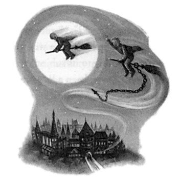
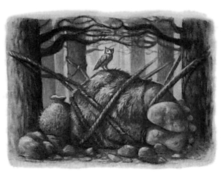
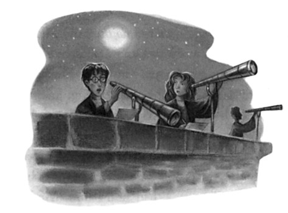
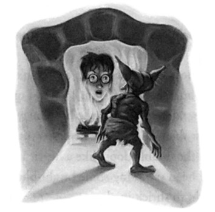
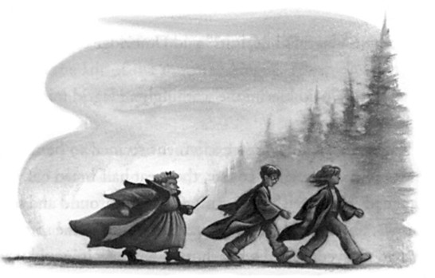

“It’s all right, Draco,” said Snape, lowering his wand. “Potter is here for a little Remedial Potions.”
Harry had not seen Malfoy look so gleeful since Umbridge had turned up to inspect Hagrid.
“I didn’t know,” he said, leering at Harry, who knew his face was burning. He would have given a great deal to be able to shout the truth at Malfoy — or, even better, to hit him with a good curse.
“Well, Draco, what is it?” asked Snape.
“It’s Professor Umbridge, sir — she needs your help,” said Malfoy.
“They’ve found Montague, sir. He’s turned up jammed inside a toilet on the fourth floor.”
638
SNAPE’S WORST
MEMORY
“How did he get in there?” demanded Snape.
“I don’t know, sir, he’s a bit confused. . . .”
“Very well, very well — Potter,” said Snape, “we shall resume this lesson tomorrow evening instead.”
He turned and swept from his office. Malfoy mouthed “Remedial Potions?” at Harry behind Snape’s back before following him.
Seething, Harry replaced his wand inside his robes and made to leave the room. At least he had twenty-four more hours in which to practice; he knew he ought to feel grateful for the narrow escape, though it was hard that it came at the expense of Malfoy telling the whole school that he needed Remedial Potions. . . .
He was at the office door when he saw it: a patch of shivering light dancing on the door frame. He stopped, looking at it, reminded of something. . . . Then he remembered: It was a little like the lights he had seen in his dream last night, the lights in the second room he had walked through on his journey through the Department of Mysteries.
He turned around. The light was coming from the Pensieve sitting on Snape’s desk. The silver-white contents were ebbing and swirling within. Snape’s thoughts . . . things he did not want Harry to see if he broke through Snape’s defenses accidentally. . . .
Harry gazed at the Pensieve, curiosity welling inside him. . . . What was it that Snape was so keen to hide from Harry?
The silvery lights shivered on the wall. . . . Harry took two steps toward the desk, thinking hard. Could it possibly be information about the Department of Mysteries that Snape was determined to keep from him?
Harry looked over his shoulder, his heart now pumping harder and faster than ever. How long would it take Snape to release Montague from the toilet? Would he come straight back to his office afterward, or accompany Montague to the hospital wing? Surely the latter . . .
Montague was Captain of the Slytherin Quidditch team, Snape would want to make sure he was all right. . . .
639
CHAPTER TWENTY-EIGHT
Harry walked the remaining few feet to the Pensieve and stood over it, gazing into its depths. He hesitated, listening, then pulled out his wand again. The office and the corridor beyond were completely silent. He gave the contents of the Pensieve a small prod with the end of his wand.
The silvery stuff within began to swirl very fast. Harry leaned forward over it and saw that it had become transparent. He was, once again, looking down into a room as though through a circular window in the ceiling. . . . In fact, unless he was much mistaken, he was looking down upon the Great Hall. . . .
His breath was actually fogging the surface of Snape’s thoughts. . . .
His brain seemed to be in limbo. . . . It would be insane to do the thing that he was so strongly tempted to do. . . . He was trembling.
. . . Snape could be back at any moment . . . but Harry thought of Cho’s anger, of Malfoy’s jeering face, and a reckless daring seized him.
He took a great gulp of breath and plunged his face into the surface of Snape’s thoughts. At once, the floor of the office lurched, tipping Harry headfirst into the Pensieve. . . .
He was falling through cold blackness, spinning furiously as he went, and then —
He was standing in the middle of the Great Hall, but the four House tables were gone. Instead there were more than a hundred smaller tables, all facing the same way, at each of which sat a student, head bent low, scribbling on a rol of parchment. The only sound was the scratching of quills and the occasional rustle as somebody adjusted their parchment. It was clearly exam time.
Sunshine was streaming through the high windows onto the bent heads, which shone chestnut and copper and gold in the bright light.
Harry looked around carefully. Snape had to be here somewhere. . . .
This was his memory. . . .
And there he was, at a table right behind Harry. Harry stared.
Snape-the-teenager had a stringy, pallid look about him, like a plant
640
SNAPE’S WORST
MEMORY
kept in the dark. His hair was lank and greasy and was flopping onto the table, his hooked nose barely half an inch from the surface of the parchment as he scribbled. Harry moved around behind Snape and read the heading of the examination paper:
defense against the dark arts —
ordinary wizarding level
So Snape had to be fifteen or sixteen, around Harry’s own age. His hand was flying across the parchment; he had written at least a foot more than his closest neighbors, and yet his writing was minuscule and cramped.
“Five more minutes!”
The voice made Harry jump; turning, he saw the top of Professor Flitwick’s head moving between the desks a short distance away. Professor Flitwick was walking past a boy with untidy black hair . . . very untidy black hair. . . .
Harry moved so quickly that, had he been solid, he would have knocked desks flying. Instead he seemed to slide, dreamlike, across two aisles and up a third. The back of the black-haired boy’s head drew nearer and nearer. . . . He was straightening up now, putting down his quill, pulling his roll of parchment toward him so as to reread what he had written. . . .
Harry stopped in front of the desk and gazed down at his fifteen-year-old father.
Excitement exploded in the pit of his stomach: It was as though he was looking at himself but with deliberate mistakes. James’s eyes were hazel, his nose was slightly longer than Harry’s, and there was no scar on his forehead, but they had the same thin face, same mouth, same eyebrows. James’s hair stuck up at the back exactly as Harry’s did, his hands could have been Harry’s, and Harry could tell that when James stood up, they would be within an inch of each other’s heights.
James yawned hugely and rumpled up his hair, making it even
641
CHAPTER TWENTY-EIGHT
messier than it had been. Then, with a glance toward Professor Flitwick, he turned in his seat and grinned at a boy sitting four seats behind him.
With another shock of excitement, Harry saw Sirius give James the thumbs-up. Sirius was lounging in his chair at his ease, tilting it back on two legs. He was very good-looking; his dark hair fell into his eyes with a sort of casual elegance neither James’s nor Harry’s could ever have achieved, and a girl sitting behind him was eyeing him hopefully, though he didn’t seem to have noticed. And two seats along from this girl — Harry’s stomach gave another pleasurable squirm — was Remus Lupin. He looked rather pale and peaky (was the full moon approaching?) and was absorbed in the exam: As he reread his answers he scratched his chin with the end of his quill, frowning slightly.
So that meant Wormtail had to be around here somewhere too . . .
and sure enough, Harry spotted him within seconds: a small, mousy-haired boy with a pointed nose. Wormtail looked anxious; he was chewing his fingernails, staring down at his paper, scuffing the ground with his toes. Every now and then he glanced hopefully at his neighbor’s paper. Harry stared at Wormtail for a moment, then back at James, who was now doodling on a bit of scrap parchment. He had drawn a Snitch and was now tracing the letters L. E. What did they stand for?
“Quills down, please!” squeaked Professor Flitwick. “That means you too, Stebbins! Please remain seated while I collect your parchment! Accio!”
More than a hundred rolls of parchment zoomed into the air and into Professor Flitwick’s outstretched arms, knocking him backward off his feet. Several people laughed. A couple of students at the front desks got up, took hold of Professor Flitwick beneath the elbows, and lifted him onto his feet again.
“Thank you . . . thank you,” panted Professor Flitwick. “Very well, everybody, you’re free to go!”
642
SNAPE’S WORST
MEMORY
Harry looked down at his father, who had hastily crossed out the L. E. he had been embellishing, jumped to his feet, stuffed his quill and the exam question paper into his bag, which he slung over his back, and stood waiting for Sirius to join him.
Harry looked around and glimpsed Snape a short way away, moving between the tables toward the doors into the entrance hall, still absorbed in his own examination paper. Round-shouldered yet angular, he walked in a twitchy manner that recalled a spider, his oily hair swinging about his face.
A gang of chattering girls separated Snape from James and Sirius, and by planting himself in the midst of this group, Harry managed to keep Snape in sight while straining his ears to catch the voices of James and his friends.
“Did you like question ten, Moony?” asked Sirius as they emerged into the entrance hall.
“Loved it,” said Lupin briskly. “ ‘Give five signs that identify the werewolf.’ Excellent question.”
“D’you think you managed to get all the signs?” said James in tones of mock concern.
“Think I did,” said Lupin seriously, as they joined the crowd throng-ing around the front doors eager to get out into the sunlit grounds.
“One: He’s sitting on my chair. Two: He’s wearing my clothes. Three: His name’s Remus Lupin . . .”
Wormtail was the only one who didn’t laugh.
“I got the snout shape, the pupils of the eyes, and the tufted tail,”
he said anxiously, “but I couldn’t think what else —”
“How thick are you, Wormtail?” said James impatiently. “You run round with a werewolf once a month —”
“Keep your voice down,” implored Lupin.
Harry looked anxiously behind him again. Snape remained close by, still buried in his examination questions; but this was Snape’s memory, and Harry was sure that if Snape chose to wander off in a
643
CHAPTER TWENTY-EIGHT
different direction once outside in the grounds, he, Harry, would not be able to follow James any farther. To his intense relief, however, when James and his three friends strode off down the lawn toward the lake, Snape followed, still poring over the paper and apparently with no fixed idea of where he was going. By jogging a little ahead of him, Harry managed to maintain a close watch on James and the others.
“Well, I thought that paper was a piece of cake,” he heard Sirius say.
“I’ll be surprised if I don’t get Outstanding on it at least.”
“Me too,” said James. He put his hand in his pocket and took out a struggling Golden Snitch.
“Where’d you get that?”
“Nicked it,” said James casually. He started playing with the Snitch, allowing it to fly as much as a foot away and seizing it again; his re-flexes were excellent. Wormtail watched him in awe.
They stopped in the shade of the very same beech tree on the edge of the lake where Harry, Ron, and Hermione had spent a Sunday finishing their homework, and threw themselves down on the grass.
Harry looked over his shoulder yet again and saw, to his delight, that Snape had settled himself on the grass in the dense shadows of a clump of bushes. He was as deeply immersed in the O.W.L. paper as ever, which left Harry free to sit down on the grass between the beech and the bushes and watch the foursome under the tree.
The sunlight was dazzling on the smooth surface of the lake, on the bank of which the group of laughing girls who had just left the Great Hall were sitting with shoes and socks off, cooling their feet in the water.
Lupin had pulled out a book and was reading. Sirius stared around at the students milling over the grass, looking rather haughty and bored, but very handsomely so. James was still playing with the Snitch, letting it zoom farther and farther away, almost escaping but always grabbed at the last second. Wormtail was watching him with his mouth open. Every time James made a particularly difficult catch,
644
SNAPE’S WORST
MEMORY
Wormtail gasped and applauded. After five minutes of this, Harry wondered why James didn’t tell Wormtail to get a grip on himself, but James seemed to be enjoying the attention. Harry noticed his father had a habit of rumpling up his hair as though to make sure it did not get too tidy, and also that he kept looking over at the girls by the water’s edge.
“Put that away, will you?” said Sirius finally, as James made a fine catch and Wormtail let out a cheer. “Before Wormtail wets himself from excitement.”
Wormtail turned slightly pink but James grinned.
“If it bothers you,” he said, stuffing the Snitch back in his pocket.
Harry had the distinct impression that Sirius was the only one for whom James would have stopped showing off.
“I’m bored,” said Sirius. “Wish it was full moon.”
“You might,” said Lupin darkly from behind his book. “We’ve still got Transfiguration, if you’re bored you could test me. . . . Here.” He held out his book.
Sirius snorted. “I don’t need to look at that rubbish, I know it all.”
“This’ll liven you up, Padfoot,” said James quietly. “Look who it is. . . .”
Sirius’s head turned. He had become very still, like a dog that has scented a rabbit.
“Excellent,” he said softly. “Snivellus. ”
Harry turned to see what Sirius was looking at.
Snape was on his feet again, and was stowing the O.W.L. paper in his bag. As he emerged from the shadows of the bushes and set off across the grass, Sirius and James stood up. Lupin and Wormtail remained sitting: Lupin was still staring down at his book, though his eyes were not moving and a faint frown line had appeared between his eyebrows. Wormtail was looking from Sirius and James to Snape with a look of avid anticipation on his face.
“All right, Snivellus?” said James loudly.
645
CHAPTER TWENTY-EIGHT
Snape reacted so fast it was as though he had been expecting an attack: Dropping his bag, he plunged his hand inside his robes, and his wand was halfway into the air when James shouted, “Expelliarmus!”
Snape’s wand flew twelve feet into the air and fell with a little thud in the grass behind him. Sirius let out a bark of laughter.
“Impedimenta!” he said, pointing his wand at Snape, who was knocked off his feet, halfway through a dive toward his own fallen wand.
Students all around had turned to watch. Some of them had gotten to their feet and were edging nearer to watch. Some looked apprehensive, others entertained.
Snape lay panting on the ground. James and Sirius advanced on him, wands up, James glancing over his shoulder at the girls at the water’s edge as he went. Wormtail was on his feet now, watching hungrily, edging around Lupin to get a clearer view.
“How’d the exam go, Snivelly?” said James.
“I was watching him, his nose was touching the parchment,” said Sirius viciously. “There’ll be great grease marks all over it, they won’t be able to read a word.”
Several people watching laughed; Snape was clearly unpopular.
Wormtail sniggered shrilly. Snape was trying to get up, but the jinx was still operating on him; he was struggling, as though bound by invisible ropes.
“You — wait,” he panted, staring up at James with an expression of purest loathing. “You — wait. . . .”
“Wait for what?” said Sirius coolly. “What’re you going to do, Snivelly, wipe your nose on us?”
Snape let out a stream of mixed swearwords and hexes, but his wand being ten feet away nothing happened.
“Wash out your mouth,” said James coldly. “Scourgify!”
Pink soap bubbles streamed from Snape’s mouth at once; the froth was covering his lips, making him gag, choking him —
646
SNAPE’S WORST
MEMORY
“Leave him ALONE!”
James and Sirius looked around. James’s free hand jumped to his hair again.
It was one of the girls from the lake edge. She had thick, dark red hair that fell to her shoulders and startlingly green almond-shaped eyes — Harry’s eyes.
Harry’s mother . . .
“All right, Evans?” said James, and the tone of his voice was suddenly pleasant, deeper, more mature.
“Leave him alone,” Lily repeated. She was looking at James with every sign of great dislike. “What’s he done to you?”
“Well,” said James, appearing to deliberate the point, “it’s more the fact that he exists, if you know what I mean. . . .”
Many of the surrounding watchers laughed, Sirius and Wormtail included, but Lupin, still apparently intent on his book, didn’t, and neither did Lily.
“You think you’re funny,” she said coldly. “But you’re just an arrogant, bullying toerag, Potter. Leave him alone. ”
“I will if you go out with me, Evans,” said James quickly. “Go on
. . . Go out with me, and I’ll never lay a wand on old Snivelly again.”
Behind him, the Impediment Jinx was wearing off. Snape was beginning to inch toward his fallen wand, spitting out soapsuds as he crawled.
“I wouldn’t go out with you if it was a choice between you and the giant squid,” said Lily.
“Bad luck, Prongs,” said Sirius briskly, turning back to Snape. “OY!”
But too late; Snape had directed his wand straight at James; there was a flash of light and a gash appeared on the side of James’s face, spattering his robes with blood. James whirled about; a second flash of light later, Snape was hanging upside down in the air, his robes falling over his head to reveal skinny, pallid legs and a pair of graying underpants.
647
CHAPTER TWENTY-EIGHT
Many people in the small crowd watching cheered. Sirius, James, and Wormtail roared with laughter.
Lily, whose furious expression had twitched for an instant as though she was going to smile, said, “Let him down!”
“Certainly,” said James and he jerked his wand upward. Snape fell into a crumpled heap on the ground. Disentangling himself from his robes, he got quickly to his feet, wand up, but Sirius said, “Petrificus Totalus!” and Snape keeled over again at once, rigid as a board.
“LEAVE HIM ALONE!” Lily shouted. She had her own wand out now. James and Sirius eyed it warily.
“Ah, Evans, don’t make me hex you,” said James earnestly.
“Take the curse off him, then!”
James sighed deeply, then turned to Snape and muttered the countercurse.
“There you go,” he said, as Snape struggled to his feet again, “you’re lucky Evans was here, Snivellus —”
“I don’t need help from filthy little Mudbloods like her!”
Lily blinked. “Fine,” she said coolly. “I won’t bother in future. And I’d wash your pants if I were you, Snivellus. ”
“Apologize to Evans!” James roared at Snape, his wand pointed threateningly at him.
“I don’t want you to make him apologize,” Lily shouted, rounding on James. “You’re as bad as he is. . . .”
“What?” yelped James. “I’d NEVER call you a — you-know-what!”
“Messing up your hair because you think it looks cool to look like you’ve just got off your broomstick, showing off with that stupid Snitch, walking down corridors and hexing anyone who annoys you just because you can — I’m surprised your broomstick can get off the ground with that fat head on it. You make me SICK.”
She turned on her heel and hurried away.
“Evans!” James shouted after her, “Hey, EVANS!”
But she didn’t look back.
648
SNAPE’S WORST
MEMORY
“What is it with her?” said James, trying and failing to look as though this was a throwaway question of no real importance to him.
“Reading between the lines, I’d say she thinks you’re a bit conceited, mate,” said Sirius.
“Right,” said James, who looked furious now, “right —”
There was another flash of light, and Snape was once again hanging upside down in the air.
“Who wants to see me take off Snivelly’s pants?”
But whether James really did take off Snape’s pants, Harry never found out. A hand had closed tight over his upper arm, closed with a pincerlike grip. Wincing, Harry looked around to see who had hold of him, and saw, with a thrill of horror, a fully grown, adult-sized Snape standing right beside him, white with rage.
“Having fun?”
Harry felt himself rising into the air. The summer’s day evaporated around him, he was floating upward through icy blackness, Snape’s hand still tight upon his upper arm. Then, with a swooping feeling as though he had turned head over heels in midair, his feet hit the stone floor of Snape’s dungeon, and he was standing again beside the Pensieve on Snape’s desk in the shadowy, present-day Potions master’s study.
“So,” said Snape, gripping Harry’s arm so tightly Harry’s hand was starting to feel numb. “So . . . been enjoying yourself, Potter?”
“N-no . . .” said Harry, trying to free his arm.
It was scary: Snape’s lips were shaking, his face was white, his teeth were bared.
“Amusing man, your father, wasn’t he?” said Snape, shaking Harry so hard that his glasses slipped down his nose.
“I — didn’t —”
Snape threw Harry from him with all his might. Harry fell hard onto the dungeon floor.
“You will not tell anybody what you saw!” Snape bellowed.
649
CHAPTER TWENTY-EIGHT
“No,” said Harry, getting to his feet as far from Snape as he could.
“No, of course I w —”
“Get out, get out, I don’t want to see you in this office ever again!”
And as Harry hurtled toward the door, a jar of dead cockroaches exploded over his head. He wrenched the door open and flew away up the corridor, stopping only when he had put three floors between himself and Snape. There he leaned against the wall, panting, and rubbing his bruised arm.
He had no desire at all to return to Gryffindor Tower so early, nor to tell Ron and Hermione what he had just seen. What was making Harry feel so horrified and unhappy was not being shouted at or having jars thrown at him — it was that he knew how it felt to be humiliated in the middle of a circle of onlookers, knew exactly how Snape had felt as his father had taunted him, and that judging from what he had just seen, his father had been every bit as arrogant as Snape had always told him.
650

C H A P T E R T W E N T Y - N I N E
CAREER ADVICE
ut why haven’t you got Occlumency lessons anymore?” said HerB mione, frowning.
“I’ve told you,” Harry muttered. “Snape reckons I can carry on by myself now I’ve got the basics. . . .”
“So you’ve stopped having funny dreams?” said Hermione skeptically.
“Pretty much,” said Harry, not looking at her.
“Well, I don’t think Snape should stop until you’re absolutely sure you can control them!” said Hermione indignantly. “Harry, I think you should go back to him and ask —”
“No,” said Harry forcefully. “Just drop it, Hermione, okay?”
It was the first day of the Easter holidays and Hermione, as was her custom, had spent a large part of the day drawing up study schedules for the three of them. Harry and Ron had let her do it — it was easier than arguing with her and, in any case, they might come in useful.
Ron had been startled to discover that there were only six weeks left until their exams.
651
CHAPTER TWENTY-NINE
“How can that come as a shock?” Hermione demanded, as she tapped each little square on Ron’s schedule with her wand so that it flashed a different color according to its subject.
“I dunno . . .” said Ron, “there’s been a lot going on. . . .”
“Well, there you are,” she said, handing him his schedule, “if you follow that you should do fine.”
Ron looked down it gloomily, but then brightened.
“You’ve given me an evening off every week!”
“That’s for Quidditch practice,” said Hermione.
The smile faded from Ron’s face.
“What’s the point?” he said. “We’ve got about as much chance of winning the Quidditch Cup this year as Dad’s got of becoming Minister of Magic. . . .”
Hermione said nothing. She was looking at Harry, who was staring blankly at the opposite wall of the common room while Crookshanks pawed at his hand, trying to get his ears scratched.
“What’s wrong, Harry?”
“What?” he said quickly. “Nothing . . .”
He seized his copy of Defensive Magical Theory and pretended to be looking something up in the index. Crookshanks gave him up as a bad job and slunk away under Hermione’s chair.
“I saw Cho earlier,” said Hermione tentatively, “and she looked really miserable too. . . . Have you two had a row again?”
“Wha — oh yeah, we have,” said Harry, seizing gratefully on the excuse.
“What about?”
“That sneak friend of hers, Marietta,” said Harry.
“Yeah, well, I don’t blame you!” said Ron angrily, setting down his study schedule. “If it hadn’t been for her . . .”
Ron went into a rant about Marietta Edgecombe, which Harry found helpful. All he had to do was look angry, nod, and say “yeah”
652
CAREER ADVICE
and “that’s right” whenever Ron drew breath, leaving his mind free to dwell, ever more miserably, on what he had seen in the Pensieve.
He felt as though the memory of it was eating him from inside.
He had been so sure that his parents had been wonderful people that he never had the slightest difficulty in disbelieving Snape’s aspersions on his father’s character. Hadn’t people like Hagrid and Sirius told Harry how wonderful his father had been? ( Yeah, well, look what Sirius was like himself, said a nagging voice inside Harry’s head. . . .
He was as bad, wasn’t he?) Yes, he had once overheard Professor McGonagall saying that his father and Sirius had been troublemak-ers at school, but she had described them as forerunners of the Weasley twins, and Harry could not imagine Fred and George dangling someone upside down for the fun of it . . . not unless they really loathed them . . . Perhaps Malfoy, or somebody who really deserved it . . .
Harry tried to make a case for Snape having deserved what he had suffered at James’s hands — but hadn’t Lily asked, “What’s he done to you?” And hadn’t James replied, “It’s more the fact that he exists, if you know what I mean?” Hadn’t James started it all simply because Sirius said he was bored? Harry remembered Lupin saying back in Grimmauld Place that Dumbledore had made him prefect in the hope that he would be able to exercise some control over James and Sirius. . . .
But in the Pensieve, he had sat there and let it all happen. . . .
Harry reminded himself that Lily had intervened; his mother had been decent, yet the memory of the look on her face as she had shouted at James disturbed him quite as much as anything else. She had clearly loathed James and Harry simply could not understand how they could have ended up married. Once or twice he even wondered whether James had forced her into it. . . .
For nearly five years the thought of his father had been a source of comfort, of inspiration. Whenever someone had told him he was like
653
CHAPTER TWENTY-NINE
James he had glowed with pride inside. And now . . . now he felt cold and miserable at the thought of him.
The weather grew breezier, brighter, and warmer as the holidays passed, but Harry was stuck with the rest of the fifth and seventh years, who were all trapped inside, traipsing back and forth to the library. Harry pretended that his bad mood had no other cause but the approaching exams, and as his fellow Gryffindors were sick of studying themselves, his excuse went unchallenged.
“Harry, I’m talking to you, can you hear me?”
“Huh?”
He looked around. Ginny Weasley, looking very windswept, had joined him at the library table where he had been sitting alone. It was late on Sunday evening; Hermione had gone back to Gryffindor Tower to review Ancient Runes; Ron had Quidditch practice.
“Oh hi,” said Harry, pulling his books back toward him. “How come you’re not at practice?”
“It’s over,” said Ginny. “Ron had to take Jack Sloper up to the hospital wing.”
“Why?”
“Well, we’re not sure, but we think he knocked himself out with his own bat.” She sighed heavily. “Anyway . . . a package just arrived, it’s only just got through Umbridge’s new screening process. . . .”
She hoisted a box wrapped in brown paper onto the table; it had clearly been unwrapped and carelessly rewrapped, and there was a scribbled note across it in red ink, reading inspected and passed by the hogwarts high inquisitor.
“It’s Easter eggs from Mum,” said Ginny. “There’s one for you. . . .
There you go. . . .”
She handed him a handsome chocolate egg decorated with small, iced Snitches and, according to the packaging, containing a bag of Fizzing Whizbees. Harry looked at it for a moment, then, to his horror, felt a hard lump rise in his throat.
654
CAREER ADVICE
“Are you okay, Harry?” asked Ginny quietly.
“Yeah, I’m fine,” said Harry gruffly. The lump in his throat was painful. He did not understand why an Easter egg should have made him feel like this.
“You seem really down lately,” Ginny persisted. “You know, I’m sure if you just talked to Cho . . .”
“It’s not Cho I want to talk to,” said Harry brusquely.
“Who is it, then?” asked Ginny.
“I . . .”
He glanced around to make quite sure that nobody was listening; Madam Pince was several shelves away, stamping out a pile of books for a frantic-looking Hannah Abbott.
“I wish I could talk to Sirius,” he muttered. “But I know I can’t.”
More to give himself something to do than because he really wanted any, Harry unwrapped his Easter egg, broke off a large bit, and put it into his mouth.
“Well,” said Ginny slowly, helping herself to a bit of egg too, “if you really want to talk to Sirius, I expect we could think of a way to do it. . . .”
“Come on,” said Harry hopelessly. “With Umbridge policing the fires and reading all our mail?”
“The thing about growing up with Fred and George,” said Ginny thoughtfully, “is that you sort of start thinking anything’s possible if you’ve got enough nerve.”
Harry looked at her. Perhaps it was the effect of the chocolate —
Lupin had always advised eating some after encounters with dementors — or simply because he had finally spoken aloud the wish that had been burning inside him for a week, but he felt a bit more hopeful. . . .
“WHAT DO YOU THINK YOU ARE DOING?”
“Oh damn,” whispered Ginny, jumping to her feet. “I forgot —”
Madam Pince was swooping down upon them, her shriveled face contorted with rage.
655
CHAPTER TWENTY-NINE
“Chocolate in the library!” she screamed. “Out — out — OUT!”
And whipping out her wand, she caused Harry’s books, bag, and ink bottle to chase him and Ginny from the library, whacking them repeatedly over the head as they ran.
As though to underline the importance of their upcoming examinations, a batch of pamphlets, leaflets, and notices concerning various Wizarding careers appeared on the tables in Gryffindor Tower shortly before the end of the holidays, along with yet another notice on the board, which read:
CAREER ADVICE
All fifth years will be required to attend a short meeting with their Head of House during the first week of the Summer term, in which they will be given the opportunity to discuss their future careers. Times of individual appointments are listed below.
Harry looked down the list and found that he was expected in Professor McGonagall’s office at half-past two on Monday, which would mean missing most of Divination. He and the other fifth years spent a considerable part of the final weekend of the Easter break reading all the career information that had been left there for their perusal.
“Well, I don’t fancy Healing,” said Ron on the last evening of the holidays. He was immersed in a leaflet that carried the crossed bone-and-wand emblem of St. Mungo’s on its front. “It says here you need at least an E at N.E.W.T. level in Potions, Herbology, Transfiguration, Charms, and Defense Against the Dark Arts. I mean . . . blimey. . . .
Don’t want much, do they?”
“Well, it’s a very responsible job, isn’t it?” said Hermione absently.
She was poring over a bright pink-and-orange leaflet that was headed so you think you’d like to work in muggle relations? “You don’t
656
CAREER ADVICE
seem to need many qualifications to liaise with Muggles. . . . All they want is an O.W.L. in Muggle Studies. . . . ‘ Much more important is your enthusiasm, patience, and a good sense of fun!’ ”
“You’d need more than a good sense of fun to liaise with my uncle,”
said Harry darkly. “Good sense of when to duck, more like . . .” He was halfway through a pamphlet on Wizard banking. “Listen to this:
“ ‘ Are you seeking a challenging career involving travel, adventure, and substantial, danger-related treasure bonuses? Then consider a position with Gringotts Wizarding Bank, who are currently recruiting Curse-Breakers for thrilling opportunities abroad. . . .’ They want Arithmancy, though. . . . You could do it, Hermione!”
“I don’t much fancy banking,” said Hermione vaguely, now immersed in have you got what it takes to train security trolls?
“Hey,” said a voice in Harry’s ear. He looked around; Fred and George had come to join them. “Ginny’s had a word with us about you,” said Fred, stretching out his legs on the table in front of them and causing several booklets on careers with the Ministry of Magic to slide off onto the floor. “She says you need to talk to Sirius?”
“What?” said Hermione sharply, freezing with her hand halfway toward picking up make a bang at the department of magical accidents and catastrophes.
“Yeah . . .” said Harry, trying to sound casual, “yeah, I thought I’d like —”
“Don’t be so ridiculous,” said Hermione, straightening up and looking at him as though she could not believe her eyes. “With Umbridge groping around in the fires and frisking all the owls?”
“Well, we think we can find a way around that,” said George, stretching and smiling. “It’s a simple matter of causing a diversion.
Now, you might have noticed that we have been rather quiet on the mayhem front during the Easter holidays?”
“What was the point, we asked ourselves, of disrupting leisure time?” continued Fred. “No point at all, we answered ourselves. And
657
CHAPTER TWENTY-NINE
of course, we’d have messed up people’s studying too, which would be the very last thing we’d want to do.”
He gave Hermione a sanctimonious little nod. She looked rather taken aback by this thoughtfulness.
“But it’s business as usual from tomorrow,” Fred continued briskly.
“And if we’re going to be causing a bit of uproar, why not do it so that Harry can have his chat with Sirius?”
“Yes, but still, ” said Hermione with an air of explaining something very simple to somebody very obtuse, “even if you do cause a diversion, how is Harry supposed to talk to him?”
“Umbridge’s office,” said Harry quietly.
He had been thinking about it for a fortnight and could think of no alternative; Umbridge herself had told him that the only fire that was not being watched was her own.
“Are — you — insane?” said Hermione in a hushed voice.
Ron had lowered his leaflet on jobs in the cultivated fungus trade and was watching the conversation warily.
“I don’t think so,” said Harry, shrugging.
“And how are you going to get in there in the first place?”
Harry was ready for this question.
“Sirius’s knife,” he said.
“Excuse me?”
“Christmas before last Sirius gave me a knife that’ll open any lock,”
said Harry. “So even if she’s bewitched the door so Alohomora won’t work, which I bet she has —”
“What do you think about this?” Hermione demanded of Ron, and Harry was reminded irresistibly of Mrs. Weasley appealing to her husband during Harry’s first dinner in Grimmauld Place.
“I dunno,” said Ron, looking alarmed at being asked to give an opinion. “If Harry wants to do it, it’s up to him, isn’t it?”
“Spoken like a true friend and Weasley,” said Fred, clapping Ron hard on the back. “Right, then. We’re thinking of doing it tomorrow,
658
CAREER ADVICE
just after lessons, because it should cause maximum impact if everybody’s in the corridors — Harry, we’ll set it off in the east wing somewhere, draw her right away from her own office — I reckon we should be able to guarantee you, what, twenty minutes?” he said, looking at George.
“Easy,” said George.
“What sort of diversion is it?” asked Ron.
“You’ll see, little bro,” said Fred, as he and George got up again.
“At least, you will if you trot along to Gregory the Smarmy’s corridor round about five o’clock tomorrow.”
Harry awoke very early the next day, feeling almost as anxious as he had done on the morning of his hearing at the Ministry of Magic. It was not only the prospect of breaking into Umbridge’s office and using her fire to speak to Sirius that was making him feel nervous, though that was certainly bad enough — today also happened to be the first time he would be in close proximity with Snape since Snape had thrown him out of his office, as they had Potions that day.
After lying in bed for a while thinking about the day ahead, Harry got up very quietly and moved across to the window beside Neville’s bed, staring out on a truly glorious morning. The sky was a clear, misty, opalescent blue. Directly ahead of him, Harry could see the towering beech tree below which his father had once tormented Snape. He was not sure what Sirius could possibly say to him that would make up for what he had seen in the Pensieve, but he was desperate to hear Sirius’s own account of what had happened, to know of any mitigating factors there might have been, any excuse at all for his father’s behavior. . . .
Something caught Harry’s attention: movement on the edge of the Forbidden Forest. Harry squinted into the sun and saw Hagrid emerging from between the trees. He seemed to be limping. As Harry watched, Hagrid staggered to the door of his cabin and disappeared
659
CHAPTER TWENTY-NINE
inside it. Harry watched the cabin for several minutes. Hagrid did not emerge again, but smoke furled from the chimney, so Hagrid could not be so badly injured that he was unequal to stoking the fire. . . .
Harry turned away from the window, headed back to his trunk, and started to dress.
With the prospect of forcing entry into Umbridge’s office ahead, Harry had never expected the day to be a restful one, but he had not reckoned on Hermione’s almost continual attempts to dissuade him from what he was planning to do at five o’clock. For the first time ever, she was at least as inattentive to Professor Binns in History of Magic as Harry and Ron were, keeping up a stream of whispered admoni-tions that Harry tried very hard to ignore.
“. . . and if she does catch you there, apart from being expelled, she’ll be able to guess you’ve been talking to Snuffles and this time I expect she’ll force you to drink Veritaserum and answer her questions. . . .”
“Hermione,” said Ron in a low and indignant voice, “are you going to stop telling Harry off and listen to Binns, or am I going to have to take notes instead?”
“You take notes for a change, it won’t kill you!”
By the time they reached the dungeons, neither Harry nor Ron was speaking to Hermione any longer. Undeterred, she took advantage of their silence to maintain an uninterrupted flow of dire warnings, all uttered under her breath in a vehement hiss that caused Seamus to waste five whole minutes checking his cauldron for leaks.
Snape, meanwhile, seemed to have decided to act as though Harry were invisible. Harry was, of course, well used to this tactic, as it was one of Uncle Vernon’s favorites, and on the whole was grateful he had to suffer nothing worse. In fact, compared to what he usually had to endure from Snape in the way of taunts and snide remarks, he found the new approach something of an improvement and was pleased to find that when left well alone, he was able to concoct an Invigoration Draught quite easily. At the end of the lesson he scooped some of the
660
CAREER ADVICE
potion into a flask, corked it, and took it up to Snape’s desk for marking, feeling that he might at last have scraped an E.
He had just turned away when he heard a smashing noise; Malfoy gave a gleeful yell of laughter. Harry whipped around again. His potion sample lay in pieces on the floor, and Snape was watching him with a look of gloating pleasure.
“Whoops,” he said softly. “Another zero, then, Potter . . .”
Harry was too incensed to speak. He strode back to his cauldron, intending to fill another flask and force Snape to mark it, but saw to his horror that the rest of the contents had vanished.
“I’m sorry!” said Hermione with her hands over her mouth. “I’m really sorry, Harry, I thought you’d finished, so I cleared up!”
Harry could not bring himself to answer. When the bell rang he hurried out of the dungeon without a backward glance and made sure that he found himself a seat between Neville and Seamus for lunch so that Hermione could not start nagging him about using Umbridge’s office again.
He was in such a bad mood by the time that he got to Divination that he had quite forgotten his career appointment with Professor McGonagall, remembering only when Ron asked him why he wasn’t in her office. He hurtled back upstairs and arrived out of breath, only a few minutes late.
“Sorry, Professor,” he panted, as he closed the door. “I forgot. . . .”
“No matter, Potter,” she said briskly, but as she spoke, somebody else sniffed from the corner. Harry looked around.
Professor Umbridge was sitting there, a clipboard on her knee, a fussy little pie-frill around her neck, and a small, horribly smug smile on her face.
“Sit down, Potter,” said Professor McGonagall tersely. Her hands shook slightly as she shuffled the many pamphlets littering her desk.
Harry sat down with his back to Umbridge and did his best to pretend he could not hear the scratching of her quill on her clipboard.
661
CHAPTER TWENTY-NINE
“Well, Potter, this meeting is to talk over any career ideas you might have, and to help you decide which subjects you should continue into sixth and seventh years,” said Professor McGonagall. “Have you had any thoughts about what you would like to do after you leave Hogwarts?”
“Er,” said Harry.
He was finding the scratching noise from behind him very distracting.
“Yes?” Professor McGonagall prompted Harry.
“Well, I thought of, maybe, being an Auror,” Harry mumbled.
“You’d need top grades for that,” said Professor McGonagal , extracting a small, dark leaflet from under the mass on her desk and opening it. “They ask for a minimum of five N.E.W.T.s, and nothing under ‘Exceeds Expectations’ grade, I see. Then you would be required to undergo a stringent series of character and aptitude tests at the Auror office. It’s a difficult career path, Potter; they only take the best. In fact, I don’t think anybody has been taken on in the last three years.”
At this moment Professor Umbridge gave a very tiny cough, as though she was trying to see how quietly she could do it. Professor McGonagall ignored her.
“You’ll want to know which subjects you ought to take, I suppose?”
she went on, talking a little more loudly than before.
“Yes,” said Harry. “Defense Against the Dark Arts, I suppose?”
“Naturally,” said Professor McGonagall crisply. “I would also advise —”
Professor Umbridge gave another cough, a little more audible this time. Professor McGonagall closed her eyes for a moment, opened them again, and continued as though nothing had happened.
“I would also advise Transfiguration, because Aurors frequently need to Transfigure or Untransfigure in their work. And I ought to tell you now, Potter, that I do not accept students into my N.E.W.T.
662
CAREER ADVICE
classes unless they have achieved ‘Exceeds Expectations’ or higher at Ordinary Wizarding Level. I’d say you’re averaging ‘Acceptable’ at the moment, so you’ll need to put in some good hard work before the exams to stand a chance of continuing. Then you ought to do Charms, always useful, and Potions. Yes, Potter, Potions,” she added, with the merest flicker of a smile. “Poisons and antidotes are essential study for Aurors. And I must tell you that Professor Snape absolutely refuses to take students who get anything other than ‘Outstanding’ in their O.W.L.s, so —”
Professor Umbridge gave her most pronounced cough yet.
“May I offer you a cough drop, Dolores?” Professor McGonagall asked curtly, without looking at Professor Umbridge.
“Oh no, thank you very much,” said Umbridge, with that simpering laugh Harry hated so much. “I just wondered whether I could make the teensiest interruption, Minerva?”
“I daresay you’ll find you can,” said Professor McGonagall through tightly gritted teeth.
“I was just wondering whether Mr. Potter has quite the tempera-ment for an Auror?” said Professor Umbridge sweetly.
“Were you?” said Professor McGonagall haughtily. “Well, Potter,”
she continued, as though there had been no interruption, “if you are serious in this ambition, I would advise you to concentrate hard on bringing your Transfiguration and Potions up to scratch. I see Professor Flitwick has graded you between Acceptable’ and ‘Exceeds Expectations’ for the last two years, so your Charm work seems satisfactory; as for Defense Against the Dark Arts, your marks have been generally high, Professor Lupin in particular thought you — are you quite sure you wouldn’t like a cough drop, Dolores?”
“Oh, no need, thank you, Minerva,” simpered Professor Umbridge, who had just coughed her loudest yet. “I was just concerned that you might not have Harry’s most recent Defense Against the Dark Arts marks in front of you. I’m quite sure I slipped in a note . . .”
663
CHAPTER TWENTY-NINE
“What, this thing?” said Professor McGonagall in a tone of revul-sion, as she pulled a sheet of pink parchment from between the leaves of Harry’s folder. She glanced down it, her eyebrows slightly raised, then placed it back into the folder without comment.
“Yes, as I was saying, Potter, Professor Lupin thought you showed a pronounced aptitude for the subject, and obviously for an Auror —”
“Did you not understand my note, Minerva?” asked Professor Umbridge in honeyed tones, quite forgetting to cough.
“Of course I understood it,” said Professor McGonagall, her teeth clenched so tightly that the words came out a little muffled.
“Well, then, I am confused. . . . I’m afraid I don’t quite understand how you can give Mr. Potter false hope that —”
“False hope?” repeated Professor McGonagall, still refusing to look round at Professor Umbridge. “He has achieved high marks in all his Defense Against the Dark Arts tests —”
“I’m terribly sorry to have to contradict you, Minerva, but as you will see from my note, Harry has been achieving very poor results in his classes with me —”
“I should have made my meaning plainer,” said Professor McGonagall, turning at last to look Umbridge directly in the eyes. “He has achieved high marks in all Defense Against the Dark Arts tests set by a competent teacher.”
Professor Umbridge’s smile vanished as suddenly as a lightbulb blowing. She sat back in her chair, turned a sheet on her clipboard, and began scribbling very fast indeed, her bulging eyes rolling from side to side. Professor McGonagall turned back to Harry, her thin nostrils flared, her eyes burning.
“Any questions, Potter?”
“Yes,” said Harry. “What sort of character and aptitude tests do the Ministry do on you, if you get enough N.E.W.T.s?”
“Well, you’ll need to demonstrate the ability to react well to pres-
664
CAREER ADVICE
sure and so forth,” said Professor McGonagall, “perseverance and ded-ication, because Auror training takes a further three years, not to mention very high skills in practical defense. It will mean a lot more study even after you’ve left school, so unless you’re prepared to —”
“I think you’ll also find,” said Umbridge, her voice very cold now,
“that the Ministry looks into the records of those applying to be Au-rora. Their criminal records.”
“— unless you’re prepared to take even more exams after Hogwarts, you should really look at another —”
“— which means that this boy has as much chance of becoming an Auror as Dumbledore has of ever returning to this school.”
“A very good chance, then,” said Professor McGonagall.
“Potter has a criminal record,” said Umbridge loudly.
“Potter has been cleared of all charges,” said Professor McGonagall, even more loudly.
Professor Umbridge stood up. She was so short that this did not make a great deal of difference, but her fussy, simpering demeanor had given place to a hard fury that made her broad, flabby face look oddly sinister.
“Potter has no chance whatsoever of becoming an Auror!”
Professor McGonagall got to her feet too, and in her case this was a much more impressive move. She towered over Professor Umbridge.
“Potter,” she said in ringing tones, “I will assist you to become an Auror if it is the last thing I do! If I have to coach you nightly I will make sure you achieve the required results!”
“The Minister of Magic will never employ Harry Potter!” said Umbridge, her voice rising furiously.
“There may well be a new Minister of Magic by the time Potter is ready to join!” shouted Professor McGonagall.
“Aha!” shrieked Professor Umbridge, pointing a stubby finger at McGonagal . “Yes! Yes, yes, yes! Of course! That’s what you want, isn’t
665
CHAPTER TWENTY-NINE
it, Minerva McGonagall? You want Cornelius Fudge replaced by Albus Dumbledore! You think you’ll be where I am, don’t you, Senior Undersecretary to the Minister and headmistress to boot!”
“You are raving,” said Professor McGonagall, superbly disdainful.
“Potter, that concludes our career consultation.”
Harry swung his bag over his shoulder and hurried out of the room, not daring to look at Umbridge. He could hear her and Professor McGonagall continuing to shout at each other all the way back along the corridor.
Professor Umbridge was still breathing as though she had just run a race when she strode into their Defense Against the Dark Arts lesson that afternoon.
“I hope you’ve thought better of what you were planning to do, Harry,” Hermione whispered, the moment they had opened their books to chapter thirty-four (“Non-Retaliation and Negotiation”).
“Umbridge looks like she’s in a really bad mood already. . . .”
Every now and then Umbridge shot glowering looks at Harry, who kept his head down, staring at Defensive Magical Theory, his eyes unfocused, thinking. . . .
He could just imagine Professor McGonagall’s reaction if he were caught trespassing in Professor Umbridge’s office mere hours after she had vouched for him. . . . There was nothing to stop him simply going back to Gryffindor Tower and hoping that sometime during the next summer holiday he would have a chance to ask Sirius about the scene he had witnessed in the Pensieve. . . . Nothing, except that the thought of taking this sensible course of action made him feel as though a lead weight had dropped into his stomach. . . . And then there was the matter of Fred and George, whose diversion was already planned, not to mention the knife Sirius had given him, which was currently residing in his schoolbag along with his father’s old Invisibility Cloak. . . .
666
CAREER ADVICE
But the fact remained that if he were caught . . .
“Dumbledore sacrificed himself to keep you in school, Harry!”
whispered Hermione, raising her book to hide her face from Umbridge. “And if you get thrown out today it will all have been for nothing!”
He could abandon the plan and simply learn to live with the memory of what his father had done on a summer’s day more than twenty years ago. . . .
And then he remembered Sirius in the fire upstairs in the Gryffindor common room. . . .”You’re less like your father than I thought.
. . . The risk would’ve been what made it fun for James. . . .”
But did he want to be like his father anymore?
“Harry, don’t do it, please don’t do it!” Hermione said in anguished tones as the bell rang at the end of the class.
He did not answer; he did not know what to do. Ron seemed determined to give neither his opinion nor his advice. He would not look at Harry, though when Hermione opened her mouth to try dissuading Harry some more, he said in a low voice, “Give it a rest, okay?
He can make up his own mind.”
Harry’s heart beat very fast as he left the classroom. He was halfway along the corridor outside when he heard the unmistakable sounds of a diversion going off in the distance. There were screams and yells reverberating from somewhere above them. People exiting the classrooms all around Harry were stopping in their tracks and looking up at the ceiling fearfully —
Then Umbridge came pelting out of her classroom as fast as her short legs would carry her. Pulling out her wand, she hurried off in the opposite direction: It was now or never.
“Harry — please!” said Hermione weakly.
But he had made up his mind — hitching his bag more securely onto his shoulder he set off at a run, weaving in and out of students
667
CHAPTER TWENTY-NINE
now hurrying in the opposite direction, off to see what all the fuss was about in the east wing. . . .
Harry reached the corridor where Umbridge’s office was situated and found it deserted. Dashing behind a large suit of armor whose helmet creaked around to watch him, he pulled open his bag, seized Sirius’s knife, and donned the Invisibility Cloak. He then crept slowly and carefully back out from behind the suit of armor and along the corridor until he reached Umbridge’s door.
He inserted the blade of the magical knife into the crack around it and moved it gently up and down, then withdrew it. There was a tiny click, and the door swung open. He ducked inside the office, closed the door quickly behind him, and looked around.
It was empty; nothing was moving except the horrible kittens on the plates continuing to frolic on the wall above the confiscated broomsticks.
Harry pulled off his cloak and, striding over to the fireplace, found what he was looking for within seconds: a small box containing glittering Floo powder.
He crouched down in front of the empty grate, his hands shaking.
He had never done this before, though he thought he knew how it must work. Sticking his head into the fireplace, he took a large pinch of powder and dropped it onto the logs stacked neatly beneath him.
They exploded at once into emerald-green flames.
“Number twelve, Grimmauld Place!” Harry said loudly and clearly.
It was one of the most curious sensations he had ever experienced; he had traveled by Floo powder before, of course, but then it had been his entire body that had spun around and around in the flames through the network of Wizarding fireplaces that stretched over the country: This time, his knees remained firm upon the cold floor of Umbridge’s office, and only his head hurtled through the emerald fire. . . .
And then, abruptly as it had begun, the spinning stopped. Feeling
668
CAREER ADVICE
rather sick and as though he was wearing an exceptionally hot muffler around his head, Harry opened his eyes to find that he was looking up out of the kitchen fireplace at the long, wooden table, where a man sat poring over a piece of parchment.
“Sirius?”
The man jumped and looked around. It was not Sirius, but Lupin.
“Harry!” he said, looking thoroughly shocked. “What are you —
what’s happened, is everything all right?”
“Yeah,” said Harry. “I just wondered — I mean, I just fancied a —
a chat with Sirius.”
“I’ll call him,” said Lupin, getting to his feet, still looking perplexed.
“He went upstairs to look for Kreacher, he seems to be hiding in the attic again. . . .”
And Harry saw Lupin hurry out of the kitchen. Now he was left with nothing to look at but the chair and table legs. He wondered why Sirius had never mentioned how very uncomfortable it was to speak out of the fire — his knees were already objecting painfully to their prolonged contact with Umbridge’s hard stone floor.
Lupin returned with Sirius at his heels moments later.
“What is it?” said Sirius urgently, sweeping his long dark hair out of his eyes and dropping to the ground in front of the fire, so that he and Harry were on a level; Lupin knelt down too, looking very concerned. “Are you all right? Do you need help?”
“No,” said Harry, “it’s nothing like that. . . . I just wanted to talk
. . . about my dad. . . .”
They exchanged a look of great surprise, but Harry did not have time to feel awkward or embarrassed; his knees were becoming sorer by the second, and he guessed that five minutes had already passed from the start of the diversion — George had only guaranteed him twenty. He therefore plunged immediately into the story of what he had seen in the Pensieve.
669
CHAPTER TWENTY-NINE
When he had finished, neither Sirius nor Lupin spoke for a moment. Then Lupin said quietly, “I wouldn’t like you to judge your father on what you saw there, Harry. He was only fifteen —”
“I’m fifteen!” said Harry heatedly.
“Look, Harry,” said Sirius placatingly, “James and Snape hated each other from the moment they set eyes on each other, it was just one of those things, you can understand that, can’t you? I think James was everything Snape wanted to be — he was popular, he was good at Quidditch, good at pretty much everything. And Snape was just this little oddball who was up to his eyes in the Dark Arts and James —
whatever else he may have appeared to you, Harry — always hated the Dark Arts.”
“Yeah,” said Harry, “but he just attacked Snape for no good reason, just because — well, just because you said you were bored,” he finished with a slightly apologetic note in his voice.
“I’m not proud of it,” said Sirius quickly.
Lupin looked sideways at Sirius and then said, “Look, Harry, what you’ve got to understand is that your father and Sirius were the best in the school at whatever they did — everyone thought they were the height of cool — if they sometimes got a bit carried away —”
“If we were sometimes arrogant little berks, you mean,” said Sirius.
Lupin smiled.
“He kept messing up his hair,” said Harry in a pained voice.
Sirius and Lupin laughed.
“I’d forgotten he used to do that,” said Sirius affectionately.
“Was he playing with the Snitch?” said Lupin eagerly.
“Yeah,” said Harry, watching uncomprehendingly as Sirius and Lupin beamed reminiscently. “Well . . . I thought he was a bit of an idiot.”
“Of course he was a bit of an idiot!” said Sirius bracingly. “We were all idiots! Well — not Moony so much,” he said fairly, looking at Lupin, but Lupin shook his head.
670
CAREER ADVICE
“Did I ever tell you to lay off Snape?” he said. “Did I ever have the guts to tell you I thought you were out of order?”
“Yeah, well,” said Sirius, “you made us feel ashamed of ourselves sometimes. . . . That was something. . . .”
“And,” said Harry doggedly, determined to say everything that was on his mind now he was here, “he kept looking over at the girls by the lake, hoping they were watching him!”
“Oh, well, he always made a fool of himself whenever Lily was around,” said Sirius, shrugging. “He couldn’t stop himself showing off whenever he got near her.”
“How come she married him?” Harry asked miserably. “She hated him!”
“Nah, she didn’t,” said Sirius.
“She started going out with him in seventh year,” said Lupin.
“Once James had deflated his head a bit,” said Sirius.
“And stopped hexing people just for the fun of it,” said Lupin.
“Even Snape?” said Harry.
“Well,” said Lupin slowly, “Snape was a special case. I mean, he never lost an opportunity to curse James, so you couldn’t really expect James to take that lying down, could you?”
“And my mum was okay with that?”
“She didn’t know too much about it, to tell you the truth,” said Sirius. “I mean, James didn’t take Snape on dates with her and jinx him in front of her, did he?”
Sirius frowned at Harry, who was still looking unconvinced.
“Look,” he said, “your father was the best friend I ever had, and he was a good person. A lot of people are idiots at the age of fifteen. He grew out of it.”
“Yeah, okay,” said Harry heavily. “I just never thought I’d feel sorry for Snape.”
“Now you mention it,” said Lupin, a faint crease between his eyebrows, “how did Snape react when he found you’d seen all this?”
671
CHAPTER TWENTY-NINE
“He told me he’d never teach me Occlumency again,” said Harry indifferently, “like that’s a big disappoint —”
“He WHAT?” shouted Sirius, causing Harry to jump and inhale a mouthful of ashes.
“Are you serious, Harry?” said Lupin quickly. “He’s stopped giving you lessons?”
“Yeah,” said Harry, surprised at what he considered a great overreac-tion. “But it’s okay, I don’t care, it’s a bit of a relief to tell you the —”
“I’m coming up there to have a word with Snape!” said Sirius forcefully and he actually made to stand up, but Lupin wrenched him back down again.
“If anyone’s going to tell Snape it wil be me!” he said firmly. “But Harry, first of all, you’re to go back to Snape and tell him that on no account is he to stop giving you lessons — when Dumbledore hears —”
“I can’t tell him that, he’d kill me!” said Harry, outraged. “You didn’t see him when we got out of the Pensieve —”
“Harry, there is nothing so important as you learning Occlumency!” said Lupin sternly. “Do you understand me? Nothing!”
“Okay, okay,” said Harry, thoroughly discomposed, not to mention annoyed. “I’ll . . . I’ll try and say something to him. . . . But it won’t be . . .”
He fell silent. He could hear distant footsteps.
“Is that Kreacher coming downstairs?”
“No,” said Sirius, glancing behind him. “It must be somebody your end . . .”
Harry’s heart skipped several beats.
“I’d better go!” he said hastily and he pulled his head backward out of Grimmauld Place’s fire. For a moment his head seemed to be revolving on his shoulders, and then he found himself kneeling in front of Umbridge’s fire with his head firmly back on, watching the emerald flames flicker and die.
672
CAREER ADVICE
“Quickly, quickly!” he heard a wheezy voice mutter right outside the office door. “Ah, she’s left it open. . . .”
Harry dived for the Invisibility Cloak and had just managed to pull it back over himself when Filch burst into the office. He looked absolutely delighted about something and was talking to himself feverishly as he crossed the room, pulled open a drawer in Umbridge’s desk, and began rifling through the papers inside it.
“Approval for Whipping . . . Approval for Whipping . . . I can do it at last. . . . They’ve had it coming to them for years. . . .”
He pulled out a piece of parchment, kissed it, then shuffled rapidly back out of the door, clutching it to his chest.
Harry leapt to his feet and, making sure that he had his bag and the Invisibility Cloak was completely covering him, he wrenched open the door and hurried out of the office after Filch, who was hobbling along faster than Harry had ever seen him go.
One landing down from Umbridge’s office and Harry thought it was safe to become visible again; he pulled off the cloak, shoved it in his bag and hurried onward. There was a great deal of shouting and movement coming from the entrance hall. He ran down the marble staircase and found what looked like most of the school assembled there.
It was just like the night when Trelawney had been sacked. Students were standing all around the walls in a great ring (some of them, Harry noticed, covered in a substance that looked very like Stinksap); teachers and ghosts were also in the crowd. Prominent among the onlookers were members of the Inquisitorial Squad, who were all looking exceptionally pleased with themselves, and Peeves, who was bobbing overhead, gazed down upon Fred and George, who stood in the middle of the floor with the unmistakable look of two people who had just been cornered.
“So!” said Umbridge triumphantly, whom Harry realized was
673
CHAPTER TWENTY-NINE
standing just a few stairs in front of him, once more looking down upon her prey. “So . . . you think it amusing to turn a school corridor into a swamp, do you?”
“Pretty amusing, yeah,” said Fred, looking back up at her without the slightest sign of fear.
Filch elbowed his way closer to Umbridge, almost crying with happiness.
“I’ve got the form, Headmistress,” he said hoarsely, waving the piece of parchment Harry had just seen him take from her desk. “I’ve got the form and I’ve got the whips waiting. . . . Oh, let me do it now. . . .”
“Very good, Argus,” she said. “You two,” she went on, gazing down at Fred and George, “are about to learn what happens to wrongdoers in my school.”
“You know what?” said Fred. “I don’t think we are.”
He turned to his twin.
“George,” said Fred, “I think we’ve outgrown ful -time education.”
“Yeah, I’ve been feeling that way myself,” said George lightly.
“Time to test our talents in the real world, d’you reckon?” asked Fred.
“Definitely,” said George.
And before Umbridge could say a word, they raised their wands and said together, “Accio Brooms!”
Harry heard a loud crash somewhere in the distance. Looking to his left he ducked just in time — Fred and George’s broomsticks, one still trailing the heavy chain and iron peg with which Umbridge had fastened them to the wall, were hurtling along the corridor toward their owners. They turned left, streaked down the stairs, and stopped sharply in front of the twins, the chain clattering loudly on the flagged stone floor.
“We won’t be seeing you,” Fred told Professor Umbridge, swinging his leg over his broomstick.
674
CAREER ADVICE
“Yeah, don’t bother to keep in touch,” said George, mounting his own.
Fred looked around at the assembled students, and at the silent, watchful crowd.
“If anyone fancies buying a Portable Swamp, as demonstrated upstairs, come to number ninety-three, Diagon Alley — Weasleys’ Wizarding Wheezes,” he said in a loud voice. “Our new premises!”
“Special discounts to Hogwarts students who swear they’re going to use our products to get rid of this old bat,” added George, pointing at Professor Umbridge.
“STOP THEM!” shrieked Umbridge, but it was too late. As the Inquisitorial Squad closed in, Fred and George kicked off from the floor, shooting fifteen feet into the air, the iron peg swinging dangerously below. Fred looked across the hall at the poltergeist bobbing on his level above the crowd.
“Give her hell from us, Peeves.”
And Peeves, whom Harry had never seen take an order from a student before, swept his belled hat from his head and sprang to a salute as Fred and George wheeled about to tumultuous applause from the students below and sped out of the open front doors into the glorious sunset.
675

C H A P T E R T H I R T Y
GRAWP
he story of Fred and George’s flight to freedom was retold so of-T ten over the next few days that Harry could tell it would soon become the stuff of Hogwarts legend. Within a week, even those who had been eyewitnesses were half-convinced that they had seen the twins dive-bomb Umbridge on their brooms, pelting her with Dungbombs before zooming out of the doors. In the immediate aftermath of their departure there was a great wave of talk about copying them, so that Harry frequently heard students saying things like, “Honestly, some days I just feel like jumping on my broom and leaving this place,” or else, “One more lesson like that and I might just do a Weasley. . . .”
Fred and George had made sure that nobody was likely to forget them very soon. For one thing, they had not left instructions on how to remove the swamp that now filled the corridor on the fifth floor of the east wing. Umbridge and Filch had been observed trying different means of removing it but without success. Eventually the area was roped off and Filch, gnashing his teeth furiously, was given the task of punting students across it to their classrooms. Harry was certain that
676
GRAWP
teachers like McGonagall or Flitwick could have removed the swamp in an instant, but just as in the case of Fred and George’s Wildfire Whiz-Bangs, they seemed to prefer to watch Umbridge struggle.
Then there were the two large broom-shaped holes in Umbridge’s office door, through which Fred and George’s Cleansweeps had smashed to rejoin their masters. Filch fitted a new door and removed Harry’s Firebolt to the dungeons where, it was rumored, Umbridge had set an armed security troll to guard it. However, her troubles were far from over.
Inspired by Fred and George’s example, a great number of students were now vying for the newly vacant positions of Troublemakers-in-Chief. In spite of the new door, somebody managed to slip a hairy-snouted niffler into Umbridge’s office, which promptly tore the place apart in its search for shiny objects, leapt on Umbridge on her reen-trance, and tried to gnaw the rings off her stubby fingers. Dungbombs and Stinkpellets were dropped so frequently in the corridors that it became the new fashion for students to perform Bubble-Head Charms on themselves before leaving lessons, which ensured them a supply of fresh clean air, even though it gave them all the peculiar appearance of wearing upside-down goldfish bowls on their heads.
Filch prowled the corridors with a horsewhip ready in his hands, desperate to catch miscreants, but the problem was that there were now so many of them that he did not know which way to turn. The Inquisitorial Squad were attempting to help him, but odd things kept happening to its members. Warrington of the Slytherin Quidditch team reported to the hospital wing with a horrible skin complaint that made him look as though he had been coated in cornflakes. Pansy Parkinson, to Hermione’s delight, missed all her lessons the following day, as she had sprouted antlers.
Meanwhile it became clear just how many Skiving Snackboxes Fred and George had managed to sell before leaving Hogwarts. Umbridge only had to enter her classroom for the students assembled there to
677
CHAPTER THIRTY
faint, vomit, develop dangerous fevers, or else spout blood from both nostrils. Shrieking with rage and frustration she attempted to trace the mysterious symptoms to their source, but the students told her stubbornly they were suffering “Umbridge-itis.” After putting four successive classes in detention and failing to discover their secret she was forced to give up and allow the bleeding, swooning, sweating, and vomiting students to leave her classes in droves.
But not even the users of the Snackboxes could compete with that master of chaos, Peeves, who seemed to have taken Fred’s parting words deeply to heart. Cackling madly, he soared through the school, upending tables, bursting out of blackboards, and toppling statues and vases. Twice he shut Mrs. Norris inside suits of armor, from which she was rescued, yowling loudly, by the furious caretaker. He smashed lanterns and snuffed out candles, juggled burning torches over the heads of screaming students, caused neatly stacked piles of parchment to topple into fires or out of windows, flooded the second floor when he pulled off all the taps in the bathrooms, dropped a bag of tarantu-las in the middle of the Great Hall during breakfast and, whenever he fancied a break, spent hours at a time floating along after Umbridge and blowing loud raspberries every time she spoke.
None of the staff but Filch seemed to be stirring themselves to help her. Indeed, a week after Fred and George’s departure Harry witnessed Professor McGonagall walking right past Peeves, who was determinedly loosening a crystal chandelier, and could have sworn he heard her tell the poltergeist out of the corner of her mouth, “It unscrews the other way.”
To cap matters, Montague had still not recovered from his sojourn in the toilet. He remained confused and disorientated and his parents were to be observed one Tuesday morning striding up the front drive, looking extremely angry.
“Should we say something?” said Hermione in a worried voice, pressing her cheek against the Charms window so that she could see
678
GRAWP
Mr. and Mrs. Montague marching inside. “About what happened to him? In case it helps Madam Pomfrey cure him?”
“ ’Course not, he’l recover,” said Ron indifferently.
“Anyway, more trouble for Umbridge, isn’t it?” said Harry in a satisfied voice.
He and Ron both tapped the teacups they were supposed to be charming with their wands. Harry’s spouted four very short legs that would not reach the desk and wriggled pointlessly in midair. Ron’s grew four very thin spindly legs that hoisted the cup off the desk with great difficulty, trembled for a few seconds, then folded, causing the cup to crack into two.
“Reparo!” said Hermione quickly, mending Ron’s cup with a wave of her wand. “That’s all very well, but what if Montague’s permanently injured?”
“Who cares?” said Ron irritably, while his teacup stood drunkenly again, trembling violently at the knees. “Montague shouldn’t have tried to take all those points from Gryffindor, should he? If you want to worry about anyone, Hermione, worry about me!”
“You?” she said, catching her teacup as it scampered happily away across the desk on four sturdy little willow-patterned legs and replacing it in front of her. “Why should I be worried about you?”
“When Mum’s next letter finally gets through Umbridge’s screening process,” said Ron bitterly, now holding his cup up while its frail legs tried feebly to support its weight, “I’m going to be in deep trouble. I wouldn’t be surprised if she’s sent a Howler again.”
“But —”
“It’ll be my fault Fred and George left, you wait,” said Ron darkly.
“She’ll say I should’ve stopped them leaving, I should’ve grabbed the ends of their brooms and hung on or something. . . . Yeah, it’ll be all my fault. . . .”
“Well, if she does say that it’ll be very unfair, you couldn’t have done anything! But I’m sure she won’t, I mean, if it’s really true they’ve got
679
CHAPTER THIRTY
premises in Diagon Alley now, they must have been planning this for ages. . . .”
“Yeah, but that’s another thing, how did they get premises?” said Ron, hitting his teacup so hard with his wand that its legs collapsed again and it lay twitching before him. “It’s a bit dodgy, isn’t it? They’ll need loads of Galleons to afford the rent on a place in Diagon Alley, she’ll want to know what they’ve been up to, to get their hands on that sort of gold. . . .”
“Wel , yes, that occurred to me too,” said Hermione, al owing her teacup to jog in neat little circles around Harry’s, whose stubby little legs were still unable to touch the desktop. “I’ve been wondering whether Mundungus has persuaded them to sell stolen goods or something awful. . . .”
“He hasn’t,” said Harry curtly.
“How do you know?” said Ron and Hermione together.
“Because —” Harry hesitated, but the moment to confess finally seemed to have come. There was no good to be gained in keeping silent if it meant anyone suspected that Fred and George were criminals. “Because they got the gold from me. I gave them my Triwizard winnings last June.”
There was a shocked silence, then Hermione’s teacup jogged right over the edge of the desk and smashed on the floor.
“Oh, Harry, you didn’t!” she said.
“Yes, I did,” said Harry mutinously. “And I don’t regret it either —
I didn’t need the gold, and they’l be great at a joke shop. . . .”
“But this is excellent!” said Ron, looking thrilled. “It’s all your fault, Harry — Mum can’t blame me at all! Can I tell her?”
“Yeah, I suppose you’d better,” said Harry dully. “ ’Specially if she thinks they’re receiving stolen cauldrons or something. . . .”
Hermione said nothing at all for the rest of the lesson, but Harry had a shrewd suspicion that her self-restraint was bound to crack be-
680
GRAWP
fore long. Sure enough, once they had left the castle for break and were standing around in the weak May sunshine, she fixed Harry with a beady eye and opened her mouth with a determined air.
Harry interrupted her before she had even started.
“It’s no good nagging me, it’s done,” he said firmly. “Fred and George have got the gold — spent a good bit of it too, by the sounds of it — and I can’t get it back from them and I don’t want to. So save your breath, Hermione.”
“I wasn’t going to say anything about Fred and George!” she said in an injured voice.
Ron snorted disbelievingly and Hermione threw him a very dirty look.
“No, I wasn’t!” she said angrily. “As a matter of fact, I was going to ask Harry when he’s going to go back to Snape and ask for Occlumency lessons again!”
Harry’s heart sank. Once they had exhausted the subject of Fred and George’s dramatic departure, which admittedly had taken many hours, Ron and Hermione had wanted to hear news of Sirius. As Harry had not confided in them the reason he had wanted to talk to Sirius in the first place, it had been hard to think of things to tell them. He had ended up saying to them truthfully that Sirius wanted Harry to resume Occlumency lessons. He had been regretting this ever since; Hermione would not let the subject drop and kept revert-ing to it when Harry least expected it.
“You can’t tell me you’ve stopped having funny dreams,” Hermione said now, “because Ron told me last night you were muttering in your sleep again. . . .”
Harry threw Ron a furious look. Ron had the grace to look ashamed of himself.
“You were only muttering a bit,” he mumbled apologetically.
“Something about ‘just a bit farther.’ ”
681
CHAPTER THIRTY
“I dreamed I was watching you lot play Quidditch,” Harry lied brutally. “I was trying to get you to stretch out a bit farther to grab the Quaffle.”
Ron’s ears went red. Harry felt a kind of vindictive pleasure: He had not, of course, dreamed anything of the sort.
Last night he had once again made the journey along the Department of Mysteries corridor. He had passed through the circular room, then the room full of clicking and dancing light, until he found himself again inside that cavernous room full of shelves on which were ranged dusty glass spheres. . . .
He had hurried straight toward row number ninety-seven, turned left, and ran along it. . . . It had probably been then that he had spoken aloud. . . . Just a bit farther . . . for he could feel his conscious self struggling to wake . . . and before he had reached the end of the row, he had found himself lying in bed again, gazing up at the canopy of his four-poster.
“You are trying to block your mind, aren’t you?” said Hermione, looking beadily at Harry. “You are keeping going with your Occlumency?”
“Of course I am,” said Harry, trying to sound as though this question was insulting, but not quite meeting her eye. The truth was that he was so intensely curious about what was hidden in that room full of dusty orbs that he was quite keen for the dreams to continue.
The problem was that with just under a month to go until the exams and every free moment devoted to studying, his mind seemed saturated with information when he went to bed so that he found it very difficult to get to sleep at all. When he did, his overwrought brain presented him most nights with stupid dreams about the exams. He also suspected that part of his mind — the part that often spoke in Hermione’s voice — now felt guilty on the occasions it strayed down that corridor ending in the black door, and sought to wake him before he could reach journey’s end.
“You know,” said Ron, whose ears were still flaming red, “if Mon-
682
GRAWP
tague doesn’t recover before Slytherin play Hufflepuff, we might be in with a chance of winning the Cup.”
“Yeah, I s’pose so,” said Harry, glad of a change of subject.
“I mean, we’ve won one, lost one — if Slytherin lose to Hufflepuff next Saturday —”
“Yeah, that’s right,” said Harry, losing track of what he was agreeing to: Cho Chang had just walked across the courtyard, determinedly not looking at him.
The final match of the Quidditch season, Gryffindor versus Ravenclaw, was to take place on the last weekend of May. Although Slytherin had been narrowly defeated by Hufflepuff in their last match, Gryffindor was not daring to hope for victory, due mainly (though of course nobody said it to him) to Ron’s abysmal goalkeeping record. He, however, seemed to have found a new optimism.
“I mean, I can’t get any worse, can I?” he told Harry and Hermione grimly over breakfast on the morning of the match. “Nothing to lose now, is there?”
“You know,” said Hermione, as she and Harry walked down to the pitch a little later in the midst of a very excitable crowd, “I think Ron might do better without Fred and George around. They never exactly gave him a lot of confidence. . . .”
Luna Lovegood overtook them with what appeared to be a live eagle perched on top of her head.
“Oh gosh, I forgot!” said Hermione, watching the eagle flapping its wings as Luna walked serenely past a group of cackling and pointing Slytherins. “Cho will be playing, won’t she?”
Harry, who had not forgotten this, merely grunted.
They found seats in the topmost row of the stands. It was a fine, clear day. Ron could not wish for better, and Harry found himself hoping against hope that Ron would not give the Slytherins cause for more rousing choruses of “Weasley Is Our King.”
683
CHAPTER THIRTY
Lee Jordan, who had been very dispirited since Fred and George had left, was commentating as usual. As the teams zoomed out onto the pitches he named the players with something less than his usual gusto.
“. . . Bradley . . . Davies . . . Chang,” he said, and Harry felt his stomach perform, less of a back flip, more a feeble lurch as Cho walked out onto the pitch, her shiny black hair rippling in the slight breeze. He was not sure what he wanted to happen anymore, except that he could not stand any more rows. Even the sight of her chatting animatedly to Roger Davies as they prepared to mount their brooms caused him only a slight twinge of jealousy.
“And they’re off!” said Lee. “And Davies takes the Quaffle immediately, Ravenclaw Captain Davies with the Quaffle, he dodges Johnson, he dodges Bell, he dodges Spinnet as well. . . . He’s going straight for goal! He’s going to shoot — and — and —” Lee swore very loudly. “And he’s scored.”
Harry and Hermione groaned with the rest of the Gryffindors. Predictably, horribly, the Slytherins on the other side of the stands began to sing:
Weasley cannot save a thing,
He cannot block a single ring . . .
“Harry,” said a hoarse voice in Harry’s ear. “Hermione . . .”
Harry looked around and saw Hagrid’s enormous bearded face sticking between the seats; apparently he had squeezed his way all along the row behind, for the first and second years he had just passed had a ruffled, flattened look about them. For some reason, Hagrid was bent double as though anxious not to be seen, though he was still at least four feet taller than everybody else.
“Listen,” he whispered, “can yeh come with me? Now? While ev’ryone’s watchin’ the match?”
684
GRAWP
“Er . . . can’t it wait, Hagrid?” asked Harry. “Till the match is over?
“No,” said Hagrid. “No, Harry, it’s gotta be now . . . while ev’ryone’s lookin’ the other way. . . . Please?”
Hagrid’s nose was gently dripping blood. His eyes were both blackened. Harry had not seen him this close up since his return to the school; he looked utterly woebegone.
“ ’Course,” said Harry at once, “ ’course we’ll come. . . .”
He and Hermione edged back along their row of seats, causing much grumbling among the students who had to stand up for them.
The people in Hagrid’s row were not complaining, merely attempting to make themselves as small as possible.
“I ’ppreciate this, you two, I really do,” said Hagrid as they reached the stairs. He kept looking around nervously as they descended toward the lawn below. “I jus’ hope she doesn’ notice us goin’. . . .”
“You mean Umbridge?” said Harry. “She won’t, she’s got her whole Inquisitorial Squad sitting with her, didn’t you see? She must be expecting trouble at the match.”
“Yeah, well, a bit o’ trouble wouldn’ hurt,” said Hagrid, pausing to peer around the edge of the stands to make sure the stretch of lawn between there and his cabin was deserted. “Give us more time . . .”
“What is it, Hagrid?” said Hermione, looking up at him with a concerned expression on her face as they hurried across the lawn toward the edge of the forest.
“Yeh — yeh’ll see in a mo’,” said Hagrid, looking over his shoulder as a great roar rose from the stands behind them. “Hey — did someone jus’ score?”
“It’ll be Ravenclaw,” said Harry heavily.
“Good . . . good . . .” said Hagrid distractedly. “Tha’s good. . . .”
They had to jog to keep up with him as he strode across the lawn, looking around with every other step. When they reached his cabin, Hermione turned automatically left toward the front door; Hagrid,
685
CHAPTER THIRTY
however, walked straight past it into the shade of the trees on the out-ermost edge of the forest, where he picked up a crossbow that was leaning against a tree. When he realized they were no longer with him, he turned.
“We’re goin’ in here,” he said, jerking his shaggy head behind him.
“Into the forest?” said Hermione, perplexed.
“Yeah,” said Hagrid. “C’mon now, quick, before we’re spotted!”
Harry and Hermione looked at each other, then ducked into the cover of the trees behind Hagrid, who was already striding away from them into the green gloom, his crossbow over his arm. Harry and Hermione ran to catch up with him.
“Hagrid, why are you armed?” said Harry.
“Jus’ a precaution,” said Hagrid, shrugging his massive shoulders.
“You didn’t bring your crossbow the day you showed us the thestrals,” said Hermione timidly.
“Nah, well, we weren’ goin’ in so far then,” said Hagrid. “An’ anyway, tha’ was before Firenze left the forest, wasn’ it?”
“Why does Firenze leaving make a difference?” asked Hermione curiously.
“ ’Cause the other centaurs are good an’ riled at me, tha’s why,” said Hagrid quietly, glancing around. “They used ter be — well, yeh couldn’ call ’em friendly — but we got on all righ’. Kept ’emselves to
’emselves, bu’ always turned up if I wanted a word. Not anymore . . .”
He sighed deeply.
“Firenze said that they’re angry because he went to work for Dumbledore?” Harry asked, tripping on a protruding root because he was busy watching Hagrid’s profile.
“Yeah,” said Hagrid heavily. “Well, angry doesn’ cover it. Ruddy livid. If I hadn’ stepped in, I reckon they’d’ve kicked Firenze ter death —”
“They attacked him?” said Hermione, sounding shocked.
686
GRAWP
“Yep,” said Hagrid gruffly, forcing his way through several low-hanging branches. “He had half the herd onto him —”
“And you stopped it?” said Harry, amazed and impressed. “By yourself?”
“ ’Course I did, couldn’t stand by an’ watch ’em kill him, could I?”
said Hagrid. “Lucky I was passin’, really . . . an’ I’d’ve thought Firenze mighta remembered tha’ before he started sendin’ me stupid warnin’s!”
he added hotly and unexpectedly.
Harry and Hermione looked at each other, startled, but Hagrid, scowling, did not elaborate.
“Anyway,” he said, breathing a little more heavily than usual, “since then the other centaurs’ve bin livid with me an’ the trouble is, they’ve got a lot of influence in the forest. . . . Cleverest creatures in here . . .”
“Is that why we’re here, Hagrid?” asked Hermione. “The centaurs?”
“Ah no,” said Hagrid, shaking his head dismissively, “no, it’s not them. . . . Well, o’ course, they could complicate the problem, yeah.
. . . But yeh’ll see what I mean in a bit. . . .”
On this incomprehensible note he fell silent and forged a little ahead, taking one stride for every three of theirs, so that they had great trouble keeping up with him.
The path was becoming increasingly overgrown and the trees grew so closely together as they walked farther and farther into the forest that it was as dark as dusk. They were soon a long way past the clearing where Hagrid had shown them the thestrals, but Harry felt no sense of unease until Hagrid stepped unexpectedly off the path and began wending his way in and out of trees toward the dark heart of the forest.
“Hagrid?” said Harry, fighting his way through thickly knotted brambles over which Hagrid had stepped easily and remembering very vividly what had happened to him on the other occasions he had stepped off the forest path. “Where are we going?”
687
CHAPTER THIRTY
“Bit further,” said Hagrid over his shoulder. “C’mon, Harry. . . .
We need ter keep together now. . . .”
It was a great struggle to keep up with Hagrid, what with branches and thickets of thorn through which Hagrid marched as easily as though they were cobwebs, but which snagged Harry and Hermione’s robes, frequently entangling them so severely that they had to stop for minutes at a time to free themselves. Harry’s arms and legs were soon covered in small cuts and scratches. They were so deep in the forest now that sometimes all Harry could see of Hagrid in the gloom was a massive dark shape ahead of him. Any sound seemed threatening in the muffled silence. The breaking of a twig echoed loudly and the tiniest rustle of movement, though it might have been made by an innocent sparrow, caused Harry to peer through the gloom for a culprit. It occurred to him that he had never managed to get this far into the forest without meeting some kind of creature — their absence struck him as rather ominous.
“Hagrid, would it be all right if we lit our wands?” said Hermione quietly.
“Er . . . all righ’,” Hagrid whispered back. “In fact . . .”
He stopped suddenly and turned around; Hermione walked right into him and was knocked over backward. Harry caught her just before she hit the forest floor.
“Maybe we bes’ jus’ stop fer a momen’, so I can . . . fill yeh in,” said Hagrid. “Before we ge’ there, like.”
“Good!” said Hermione, as Harry set her back on her feet. They both murmured “Lumos!” and their wand tips ignited. Hagrid’s face swam through the gloom by the light of the two wavering beams and Harry saw that he looked nervous and sad again.
“Righ,” said Hagrid. “Well . . . see . . . the thing is . . .”
He took a great breath.
“Well, there’s a good chance I’m goin’ ter be gettin’ the sack any day now,” he said.
688
GRAWP
Harry and Hermione looked at each other, then back at him.
“But you’ve lasted this long —” Hermione said tentatively. “What makes you think —”
“Umbridge reckons it was me that put tha’ niffler in her office.”
“And was it?” said Harry, before he could stop himself.
“No, it ruddy well wasn’!” said Hagrid indignantly. “On’y anythin’
ter do with magical creatures an’ she thinks it’s got somethin’ ter do with me. Yeh know she’s bin lookin’ fer a chance ter get rid of me ever since I got back. I don’ wan’ ter go, o’ course, but if it wasn’ fer . . .
well . . . the special circumstances I’m abou’ ter explain to yeh, I’d leave righ now, before she’s go’ the chance ter do it in front o’ the whole school, like she did with Trelawney.”
Harry and Hermione both made noises of protest, but Hagrid overrode them with a wave of one of his enormous hands.
“It’s not the end o’ the world, I’ll be able ter help Dumbledore once I’m outta here, I can be useful ter the Order. An’ you lot’ll have Grubbly-Plank, yeh’ll — yeh’ll get through yer exams fine. . . .” His voice trembled and broke.
“Don’ worry abou’ me,” he said hastily, as Hermione made to pat his arm. He pulled his enormous spotted handkerchief from the pocket of his waistcoat and mopped his eyes with it. “Look, I wouldn’
be tellin’ yer this at all if I didn’ have ter. See, if I go . . . well, I can’
leave withou’ . . . withou’ tellin’ someone . . . because I’ll — I’ll need you two ter help me. An’ Ron, if he’s willin’.”
“Of course we’ll help you,” said Harry at once. “What do you want us to do?”
Hagrid gave a great sniff and patted Harry wordlessly on the shoulder with such force that Harry was knocked sideways into a tree.
“I knew yeh’d say yes,” said Hagrid into his handkerchief, “but I won’ . . . never . . . forget . . . Well . . . c’mon . . . jus’ a little bit further through here . . . Watch yerselves, now, there’s nettles. . . .”
They walked on in silence for another fifteen minutes. Harry had
689
CHAPTER THIRTY
opened his mouth to ask how much farther they had to go when Hagrid threw out his right arm to signal that they should stop.
“Really easy,” he said softly. “Very quiet, now . . .”
They crept forward and Harry saw that they were facing a large, smooth mound of earth nearly as tall as Hagrid that he thought, with a jolt of dread, was sure to be the lair of some enormous animal. Trees had been ripped up at the roots all around the mound, so that it stood on a bare patch of ground surrounded by heaps of trunks and boughs that formed a kind of fence or barricade, behind which Harry, Hermione, and Hagrid now stood.
“Sleepin’,” breathed Hagrid.
Sure enough, Harry could hear a distant, rhythmic rumbling that sounded like a pair of enormous lungs at work. He glanced sideways at Hermione, who was gazing at the mound with her mouth slightly open. She looked utterly terrified.
“Hagrid,” she said in a whisper barely audible over the sound of the sleeping creature, “who is he?”
Harry found this an odd question. . . . “What is it?” was the one he had been planning on asking.
“Hagrid, you told us,” said Hermione, her wand now shaking in her hand, “you told us none of them wanted to come!”
Harry looked from her to Hagrid and then, as realization hit him, he looked back at the mound with a small gasp of horror.
The great mound of earth, on which he, Hermione, and Hagrid could easily have stood, was moving slowly up and down in time with the deep, grunting breathing. It was not a mound at all. It was the curved back of what was clearly . . .
“Well — no — he didn’ want ter come,” said Hagrid, sounding desperate. “But I had ter bring him, Hermione, I had ter!”
“But why?” asked Hermione, who sounded as though she wanted to cry. “Why — what — oh, Hagrid!”
“I knew if I jus’ got him back,” said Hagrid, sounding close to tears
690
GRAWP
himself, “an’ — an’ taught him a few manners — I’d be able ter take him outside an’ show ev’ryone he’s harmless!”
“Harmless!” said Hermione shrilly, and Hagrid made frantic hushing noises with his hands as the enormous creature before them grunted loudly and shifted in its sleep. “He’s been hurting you all this time, hasn’t he? That’s why you’ve had all these injuries!”
“He don’ know his own strength!” said Hagrid earnestly. “An’ he’s gettin’ better, he’s not fightin’ so much anymore —”
“So this is why it took you two months to get home!” said Hermione distractedly. “Oh Hagrid, why did you bring him back if he didn’t want to come, wouldn’t he have been happier with his own people?”
“They were all bullyin’ him, Hermione, ’cause he’s so small!” said Hagrid.
“Small?” said Hermione. “Small ?”
“Hermione, I couldn’ leave him,” said Hagrid, tears now trickling down his bruised face into his beard. “See — he’s my brother!”
Hermione simply stared at him, her mouth open.
“Hagrid, when you say ‘brother,’ ” said Harry slowly, “do you mean — ?”
“Well — half-brother,” amended Hagrid. “Turns out me mother took up with another giant when she left me dad, an’ she went an’ had Grawp here —”
“Grawp?” said Harry.
“Yeah . . . well, tha’s what it sounds like when he says his name,”
said Hagrid anxiously. “He don’ speak a lot of English. . . . I’ve bin tryin’ ter teach him. . . . Anyway, she don’ seem ter have liked him much more’n she liked me. . . . See, with giantesses, what counts is producin’ good big kids, and he’s always been a bit on the runty side fer a giant — on’y sixteen foot —”
“Oh yes, tiny!” said Hermione, with a kind of hysterical sarcasm.
“Absolutely minuscule!”
691
CHAPTER THIRTY
“He was bein’ kicked around by all o’ them — I jus’ couldn’ leave him —”
“Did Madame Maxime want to bring him back?” asked Harry.
“She — well, she could see it was right importan’ ter me,” said Hagrid, twisting his enormous hands. “Bu’ — bu’ she got a bit tired of him after a while, I must admit . . . so we split up on the journey home. . . . She promised not ter tell anyone though. . . .”
“How on earth did you get him back without anyone noticing?”
said Harry.
“Well, tha’s why it took so long, see,” said Hagrid. “Could on’y travel by nigh an’ through wild country an’ stuff. ’Course, he covers the ground pretty well when he wants ter, but he kep’ wantin’ ter go back. . . .”
“Oh Hagrid, why on earth didn’t you let him!” said Hermione, flopping down onto a ripped-up tree and burying her face in her hands. “What do you think you’re going to do with a violent giant who doesn’t even want to be here!”
“Well, now — ‘violent’ — tha’s a bit harsh,” said Hagrid, still twisting his hands agitatedly. “I’ll admit he mighta taken a couple o’
swings at me when he’s bin in a bad mood, but he’s gettin’ better, loads better, settlin’ down well. . . .”
“What are those ropes for, then?” Harry asked.
He had just noticed ropes thick as saplings stretching from around the trunks of the largest nearby trees toward the place where Grawp lay curled on the ground with his back to them.
“You have to keep him tied up?” said Hermione faintly.
“Well . . . yeah . . .” said Hagrid, looking anxious. “See — it’s like I say — he doesn’ really know his strength —”
Harry understood now why there had been such a suspicious lack of any other living creature in this part of the forest.
“So what is it you want Harry and Ron and me to do?” Hermione asked apprehensively.
692
GRAWP
“Look after him,” said Hagrid croakily. “After I’m gone.”
Harry and Hermione exchanged miserable looks, Harry uncomfortably aware that he had already promised Hagrid that he would do whatever he asked.
“What — what does that involve, exactly?” Hermione inquired.
“Not food or anythin’!” said Hagrid eagerly. “He can get his own food, no problem. Birds an’ deer an’ stuff . . . No, it’s company he needs. If I jus’ knew someone was carryin’ on tryin’ ter help him a bit
. . . teachin’ him, yeh know . . .”
Harry said nothing, but turned to look back at the gigantic form lying asleep on the ground in front of them. Grawp had his back to them. Unlike Hagrid, who simply looked like a very oversize human, Grawp looked strangely misshapen. What Harry had taken to be a vast mossy boulder to the left of the great earthen mound he now recognized as Grawp’s head. It was much larger in proportion to the body than a human head, almost perfectly round and covered with tightly curling, close-growing hair the color of bracken. The rim of a single large, fleshy ear was visible on top of the head, which seemed to sit, rather like Uncle Vernon’s, directly upon the shoulders with little or no neck in between. The back, under what looked like a dirty brownish smock comprised of animal skins sewn roughly together, was very broad, and as Grawp slept, it seemed to strain a little at the rough seams of the skins. The legs were curled up under the body; Harry could see the soles of enormous, filthy, bare feet, large as sledges, resting one on top of the other on the earthy forest floor.
“You want us to teach him,” Harry said in a hollow voice. He now understood what Firenze’s warning had meant. His attempt is not working. He would do better to abandon it. Of course, the other creatures who lived in the forest would have heard Hagrid’s fruitless attempts to teach Grawp English. . . .
“Yeah — even if yeh jus’ talk ter him a bit,” said Hagrid hopefully.
693
CHAPTER THIRTY
“ ’Cause I reckon, if he can talk ter people, he’ll understand more that we all like him really, an’ want him to stay. . . .”
Harry looked at Hermione, who peered back at him from between the fingers over her face.
“Kind of makes you wish we had Norbert back, doesn’t it?” he said and she gave a very shaky laugh.
“Yeh’ll do it, then?” said Hagrid, who did not seem to have caught what Harry had just said.
“We’ll . . .” said Harry, already bound by his promise. “We’ll try, Hagrid. . . .”
“I knew I could count on yeh, Harry,” Hagrid said, beaming in a very watery way and dabbing at his face with his handkerchief again.
“An’ I don’ wan’ yeh ter put yerself out too much, like. . . . I know yeh’ve got exams. . . . If yeh could jus’ nip down here in yer Invisibility Cloak maybe once a week an’ have a little chat with him . . . I’ll wake him up, then — introduce you —”
“Wha — no!” said Hermione, jumping up, “Hagrid, no, don’t wake him, really, we don’t need —”
But Hagrid had already stepped over the great trunk in front of them and was proceeding toward Grawp. When he was around ten feet away, he lifted a long, broken bough from the ground, smiled reassuringly over his shoulder at Harry and Hermione, and then poked Grawp hard in the middle of the back with the end of the bough.
The giant gave a roar that echoed around the silent forest. Birds in the treetops overhead rose twittering from their perches and soared away. In front of Harry and Hermione, meanwhile, the gigantic Grawp was rising from the ground, which shuddered as he placed an enormous hand upon it to push himself onto his knees and turned his head to see who and what had disturbed him.
“All righ’, Grawpy?” said Hagrid in a would-be cheery voice, backing away with the long bough raised, ready to poke Grawp again.
“Had a nice sleep, eh?”
694
GRAWP
Harry and Hermione retreated as far as they could while still keeping the giant within their sights. Grawp knelt between two trees he had not yet uprooted. They looked up into his startlingly huge face, which resembled a gray full moon swimming in the gloom of the clearing. It was as though the features had been hewn onto a great stone ball. The nose was stubby and shapeless, the mouth lopsided and full of misshapen yellow teeth the size of half-bricks. The small eyes were a muddy greenish-brown and just now were half gummed together with sleep. Grawp raised dirty knuckles as big as cricket balls to his eyes, rubbed vigorously, then, without warning, pushed himself to his feet with surprising speed and agility.
“Oh my . . .” Harry heard Hermione squeal, terrified, beside him.
The trees to which the other ends of the ropes around Grawp’s wrists and ankles were attached creaked ominously. He was, as Hagrid had said, at least sixteen feet tall. Gazing blearily around, he reached out a hand the size of a beach umbrella, seized a bird’s nest from the upper branches of a towering pine and turned it upside down with a roar of apparent displeasure that there was no bird in it — eggs fell like grenades toward the ground and Hagrid threw his arms over his head to protect himself.
“Anyway, Grawpy,” shouted Hagrid, looking up apprehensively in case of further falling eggs, “I’ve brought some friends ter meet yeh.
Remember, I told yeh I might? Remember, when I said I might have ter go on a little trip an’ leave them ter look after yeh fer a bit? Remember that, Grawpy?”
But Grawp merely gave another low roar; it was hard to say whether he was listening to Hagrid or whether he even recognized the sounds Hagrid was making as speech. He had now seized the top of the pine tree and was pulling it toward him, evidently for the simple pleasure of seeing how far it would spring back when he let go.
“Now, Grawpy, don’ do that!” shouted Hagrid. “Tha’s how you ended up pullin’ up the others —”
695
CHAPTER THIRTY
And sure enough, Harry could see the earth around the tree’s roots beginning to crack.
“I got company fer yeh!” Hagrid shouted. “Company, see! Look down, yeh big buffoon, I brought yeh some friends!”
“Oh Hagrid, don’t,” moaned Hermione, but Hagrid had already raised the bough again and gave Grawp’s knee a sharp poke.
The giant let go of the top of the pine tree, which swayed menacingly and deluged Hagrid with a rain of needles, and looked down.
“This, ” said Hagrid, hastening over to where Harry and Hermione stood, “is Harry, Grawp! Harry Potter! He migh’ be comin’ ter visit yeh if I have ter go away, understand?”
The giant had only just realized that Harry and Hermione were there. They watched, in great trepidation, as he lowered his huge boulder of a head so that he could peer blearily at them.
“An’ this is Hermione, see? Her —” Hagrid hesitated. Turning to Hermione he said, “Would yeh mind if he called yeh Hermy, Hermione? On’y it’s a difficult name fer him ter remember. . . .”
“No, not at all,” squeaked Hermione.
“This is Hermy, Grawp! An’ she’s gonna be comin’ an’ all! Is’n tha’
nice? Eh? Two friends fer yeh ter — GRAWPY, NO!”
Grawp’s hand had shot out of nowhere toward Hermione — Harry seized her and pulled her backward behind the tree, so that Grawp’s fist scraped the trunk but closed on thin air.
“BAD BOY, GRAWPY!” Harry heard Hagrid yelling, as Hermione clung to Harry behind the tree, shaking and whimpering. “VERY
BAD BOY! YEH DON’ GRAB — OUCH!”
Harry poked his head out from around the trunk and saw Hagrid lying on his back, his hand over his nose. Grawp, apparently losing interest, had straightened up again and was again engaged in pulling back the pine as far as it would go.
“Righ’,” said Hagrid thickly, getting up with one hand pinching his
696
GRAWP
bleeding nose and the other grasping his crossbow. “Well . . . there yeh are. . . . Yeh’ve met him an’ — an’ now he’ll know yeh when yeh come back. Yeah . . . well . . .”
He looked up at Grawp, who was now pulling back the pine with an expression of detached pleasure on his boulderish face; the roots were creaking as he ripped them away from the ground. . . .
“Well, I reckon tha’s enough fer one day,” said Hagrid. “We’ll —
er — we’ll go back now, shall we?”
Harry and Hermione nodded. Hagrid shouldered his crossbow again and, still pinching his nose, led the way back into the trees.
Nobody spoke for a while, not even when they heard the distant crash that meant Grawp had pulled over the pine tree at last.
Hermione’s face was pale and set. Harry could not think of a single thing to say. What on earth was going to happen when somebody found out that Hagrid had hidden Grawp in the forest? And he had promised that he, Ron, and Hermione would continue Hagrid’s totally pointless attempts to civilize the giant. . . . How could Hagrid, even with his immense capacity to delude himself that fanged monsters were lovably harmless, fool himself that Grawp would ever be fit to mix with humans?
“Hold it,” said Hagrid abruptly, just as Harry and Hermione were struggling through a patch of thick knotgrass behind him. He pulled an arrow out of the quiver over his shoulder and fitted it into the crossbow. Harry and Hermione raised their wands; now that they had stopped walking, they too could hear movement close by.
“Oh blimey,” said Hagrid quietly.
“I thought that we told you, Hagrid,” said a deep male voice, “that you are no longer welcome here?”
A man’s naked torso seemed for an instant to be floating toward them through the dappled green half-light. Then they saw that his waist joined smoothly with a horse’s chestnut body. This centaur had
697
CHAPTER THIRTY
a proud, high-cheekboned face and long black hair. Like Hagrid, he was armed: A quiverful of arrows and a long bow were slung over his shoulders.
“How are yeh, Magorian?” said Hagrid warily.
The trees behind the centaur rustled and four or five more emerged behind him. Harry recognized the black-bodied and bearded Bane, whom he had met nearly four years ago on the same night he had met Firenze. Bane gave no sign that he had ever seen Harry before.
“So,” he said, with a nasty inflection in his voice, before turning immediately to Magorian. “We agreed, I think, what we would do if this human showed his face in the forest again?”
“ ‘This human’ now, am I?” said Hagrid testily. “Jus’ fer stoppin’ all of yeh committin’ murder?”
“You ought not to have meddled, Hagrid,” said Magorian. “Our ways are not yours, nor are our laws. Firenze has betrayed and dishonored us.”
“I dunno how yeh work that out,” said Hagrid impatiently. “He’s done nothin’ except help Albus Dumbledore —”
“Firenze has entered into servitude to humans,” said a gray centaur with a hard, deeply lined face.
“Servitude!” said Hagrid scathingly. “He’s doin’ Dumbledore a favor is all —”
“He is peddling our knowledge and secrets among humans,” said Magorian quietly. “There can be no return from such disgrace.”
“If yeh say so,” said Hagrid, shrugging, “but personally I think yeh’re makin’ a big mistake —”
“As are you, human,” said Bane, “coming back into our forest when we warned you —”
“Now, you listen ter me,” said Hagrid angrily. “I’ll have less of the
‘our’ forest, if it’s all the same ter you. It’s not up ter you who comes an’ goes in here —”
698
GRAWP
“No more is it up to you, Hagrid,” said Magorian smoothly. “I shal let you pass today because you are accompanied by your young —”
“They’re not his!” interrupted Bane contemptuously. “Students, Magorian, from up at the school! They have probably already profited from the traitor Firenze’s teachings. . . .”
“Nevertheless,” said Magorian calmly, “the slaughter of foals is a terrible crime. . . . We do not touch the innocent. Today, Hagrid, you pass. Henceforth, stay away from this place. You forfeited the friendship of the centaurs when you helped the traitor Firenze escape us.”
“I won’ be kept outta the fores’ by a bunch of mules like you!” said Hagrid loudly.
“Hagrid,” said Hermione in a high-pitched and terrified voice, as both Bane and the gray centaur pawed at the ground, “let’s go, please lets go!
Hagrid moved forward, but his crossbow was still raised and his eyes were still fixed threateningly upon Magorian.
“We know what you are keeping in the forest, Hagrid!” Magorian called after them, as the centaurs slipped out of sight. “And our toler-ance is waning!”
Hagrid turned and gave every appearance of wanting to walk straight back to Magorian again.
“You’ll tolerate him as long as he’s here, it’s as much his forest as yours!” he yelled, while Harry and Hermione both pushed with all their might against Hagrid’s moleskin waistcoat in an effort to keep him moving forward. Still scowling, he looked down; his expression changed to mild surprise at the sight of them both pushing him. He seemed not to have felt it.
“Calm down, you two,” he said, turning to walk on while they panted along behind him. “Ruddy old nags though, eh?”
“Hagrid,” said Hermione breathlessly, skirting the patch of nettles they had passed on their way there, “if the centaurs don’t want
699
CHAPTER THIRTY
humans in the forest, it doesn’t really look as though Harry and I will be able —”
“Ah, you heard what they said,” said Hagrid dismissively “They wouldn’t hurt foals — I mean, kids. Anyway, we can’ let ourselves be pushed around by that lot. . . .”
“Nice try,” Harry murmured to Hermione, who looked crestfallen.
At last they rejoined the path and after another ten minutes, the trees began to thin. They were able to see patches of clear blue sky again and hear, in the distance, the definite sounds of cheering and shouting.
“Was that another goal?” asked Hagrid, pausing in the shelter of the trees as the Quidditch stadium came into view. “Or d’you reckon the match is over?”
“I don’t know,” said Hermione miserably. Harry saw that she looked much the worse for wear; her hair was full of bits of twig and leaves, her robes were ripped in several places and there were numerous scratches on her face and arms. He knew he could look little better.
“I reckon it’s over, yeh know!” said Hagrid, still squinting toward the stadium. “Look — there’s people comin’ out already — if you two hurry yeh’ll be able ter blend in with the crowd an’ no one’ll know you weren’t there!”
“Good idea,” said Harry. “Wel . . . see you later, then, Hagrid. . . .”
“I don’t believe him,” said Hermione in a very unsteady voice, the moment they were out of earshot of Hagrid. “I don’t believe him. I really don’t believe him. . . .”
“Calm down,” said Harry.
“Calm down!” she said feverishly. “A giant! A giant in the forest!
And we’re supposed to give him English lessons! Always assuming, of course, we can get past the herd of murderous centaurs on the way in and out! I — don’t — believe — him!”
“We haven’t got to do anything yet!” Harry tried to reassure her in
700
GRAWP
a quiet voice, as they joined a stream of jabbering Hufflepuffs heading back toward the castle. “He’s not asking us to do anything unless he gets chucked out and that might not even happen —”
“Oh come off it, Harry!” said Hermione angrily, stopping dead in her tracks so that the people behind her had to swerve to avoid her.
“Of course he’s going to be chucked out and to be perfectly honest, after what we’ve just seen, who can blame Umbridge?”
There was a pause in which Harry glared at her, and her eyes filled slowly with tears.
“You didn’t mean that,” said Harry quietly.
“No . . . well . . . all right . . . I didn’t,” she said, wiping her eyes angrily. “But why does he have to make life so difficult for himself —
for us?”
“I dunno —”
Weasley is our King,
Weasley is our King,
He didn’t let the Quaffle in,
Weasley is our King . . .
“And I wish they’d stop singing that stupid song,” said Hermione miserably, “haven’t they gloated enough?”
A great tide of students was moving up the sloping lawns from the pitch.
“Oh, let’s get in before we have to meet the Slytherins,” said Hermione.
Weasley can save anything,
He never leaves a single ring
That’s why Gryffindors all sing:
Weasley is our King.
701
CHAPTER THIRTY
“Hermione . . .” said Harry slowly.
The song was growing louder, but it was issuing not from a crowd of green-and-silver-clad Slytherins, but from a mass of red and gold moving slowly toward the castle, which was bearing a solitary figure upon its many shoulders. . . .
Weasley is our King,
Weasley is our King,
He didn’t let the Quaffle in,
Weasley is our King . . .
“No!” said Hermione in a hushed voice.
“YES!” said Harry loudly.
“HARRY! HERMIONE!” yelled Ron, waving the silver Quidditch Cup in the air and looking quite beside himself. “WE DID IT! WE
WON!”
They beamed up at him as he passed; there was a scrum at the door of the castle and Ron’s head got rather badly bumped on the lintel, but nobody seemed to want to put him down. Still singing, the crowd squeezed itself into the entrance hall and out of sight. Harry and Hermione watched them go, beaming, until the last echoing strains of
“Weasley Is Our King” died away. Then they turned to each other, their smiles fading.
“We’ll save our news till tomorrow, shall we?” said Harry.
“Yes, al right,” said Hermione wearily. “I’m not in any hurry. . . .”
They climbed the steps together. At the front doors both instinctively looked back at the Forbidden Forest. Harry was not sure whether it was his imagination or not, but he rather thought he saw a small cloud of birds erupting into the air over the treetops in the distance, almost as though the tree in which they had been nesting had just been pulled up by the roots.
702

C H A P T E R T H I R T Y - O N E
O.W.L.S
on’s euphoria at helping Gryffindor scrape the Quidditch Cup R was such that he could not settle to anything next day. Al he wanted to do was talk over the match and Harry and Hermione found it very difficult to find an opening in which to mention Grawp — not that either of them tried very hard; neither was keen to be the one to bring Ron back to reality in quite such a brutal fashion. As it was another fine, warm day, they persuaded him to join them in studying under the beech tree on the edge of the lake, where they stood less chance of being overheard than in the common room. Ron was not particularly keen on this idea at first; he was thoroughly enjoying being patted on the back by Gryffindors walking past his chair, not to mention the occasional outbursts of “Weasley Is Our King,” but agreed after a while that some fresh air might do him good.
They spread their books out in the shade of the beech tree and sat down while Ron talked them through his first save of the match for what felt like the dozenth time.
“Well, I mean, I’d already let in that one of Davies’s, so I wasn’t feeling that confident, but I dunno, when Bradley came toward me, just
703
CHAPTER THIRTY-ONE
out of nowhere, I thought — you can do this! And I had about a second to decide which way to fly, you know, because he looked like he was aiming for the right goal hoop — my right, obviously, his left —
but I had a funny feeling that he was feinting, and so I took the chance and flew left — his right, I mean — and — well — you saw what happened,” he concluded modestly, sweeping his hair back quite unnecessarily so that it looked interestingly windswept and glancing around to see whether the people nearest to them — a bunch of gossiping third-year Hufflepuffs — had heard him. “And then, when Chambers came at me about five minutes later — what?” Ron said, stopping mid-sentence at the look on Harry’s face. “Why are you grinning?”
“I’m not,” said Harry quickly, looking down at his Transfiguration notes and attempting to straighten his face. The truth was that Ron had just reminded Harry forcibly of another Gryffindor Quidditch player who had once sat rumpling his hair under this very tree. “I’m just glad we won, that’s all.”
“Yeah,” said Ron slowly, savoring the words, “we won. Did you see the look on Chang’s face when Ginny got the Snitch right out from under her nose?”
“I suppose she cried, did she?” said Harry bitterly.
“Well, yeah — more out of temper than anything, though . . .”
Ron frowned slightly. “But you saw her chuck her broom away when she got back to the ground, didn’t you?”
“Er —” said Harry.
“Well, actually . . . no, Ron,” said Hermione with a heavy sigh, putting down her book and looking at him apologetically. “As a matter of fact, the only bit of the match Harry and I saw was Davies’s first goal.”
Ron’s carefully ruffled hair seemed to wilt with disappointment.
“You didn’t watch?” he said faintly, looking from one to the other.
“You didn’t see me make any of those saves?”
704
O.W.L.S
“Well — no,” said Hermione, stretching out a placatory hand toward him. “But Ron, we didn’t want to leave — we had to!”
“Yeah?” said Ron, whose face was growing rather red. “How come?”
“It was Hagrid,” said Harry. “He decided to tell us why he’s been covered in injuries ever since he got back from the giants. He wanted us to go into the forest with him, we had no choice, you know how he gets. . . . Anyway . . .”
The story was told in five minutes, by the end of which Ron’s indignation had been replaced by a look of total incredulity.
“He brought one back and hid it in the forest?”
“Yep,” said Harry grimly.
“No,” said Ron, as though by saying this he could make it untrue.
“No, he can’t have. . . .”
“Well, he has,” said Hermione firmly. “Grawp’s about sixteen feet tall, enjoys ripping up twenty-foot pine trees, and knows me,” she snorted, “as Hermy. ”
Ron gave a nervous laugh.
“And Hagrid wants us to . . . ?”
“Teach him English, yeah,” said Harry.
“He’s lost his mind,” said Ron in an almost awed voice.
“Yes,” said Hermione irritably, turning a page of Intermediate Transfiguration and glaring at a series of diagrams showing an owl turning into a pair of opera glasses. “Yes, I’m starting to think he has.
But unfortunately, he made Harry and me promise.”
“Wel , you’re just going to have to break your promise, that’s al ,”
said Ron firmly. “I mean, come on . . . We’ve got exams and we’re about that far,” he held up his hand to show thumb and forefinger a millimeter apart, “from being chucked out as it is. And anyway . . . remember Norbert? Remember Aragog? Have we ever come off better for mixing with any of Hagrid’s monster mates?”
“I know, it’s just that — we promised,” said Hermione in a smal voice.
705
CHAPTER THIRTY-ONE
Ron smoothed his hair flat again, looking preoccupied.
“Well,” he sighed, “Hagrid hasn’t been sacked yet, has he? He’s hung on this long, maybe he’ll hang on till the end of term and we won’t have to go near Grawp at all.”
The castle grounds were gleaming in the sunlight as though freshly painted; the cloudless sky smiled at itself in the smoothly sparkling lake, the satin-green lawns rippled occasionally in a gentle breeze: June had arrived, but to the fifth years this meant only one thing: Their O.W.L.s were upon them at last.
Their teachers were no longer setting them homework; lessons were devoted to reviewing those topics their teachers thought most likely to come up in the exams. The purposeful, feverish atmosphere drove nearly everything but the O.W.L.s from Harry’s mind, though he did wonder occasionally during Potions lessons whether Lupin had ever told Snape that he must continue giving Harry Occlumency tuition: If he had, then Snape had ignored Lupin as thoroughly as he was now ignoring Harry. This suited Harry very well; he was quite busy and tense enough without extra classes with Snape, and to his relief Hermione was much too preoccupied these days to badger him about Occlumency. She was spending a lot of time muttering to herself and had not laid out any elf clothes for days.
She was not the only person acting oddly as the O.W.L.s drew steadily nearer. Ernie Macmillan had developed an irritating habit of interrogating people about their study habits.
“How many hours d’you think you’re doing a day?” he demanded of Harry and Ron as they queued outside Herbology, a manic gleam in his eyes.
“I dunno,” said Ron. “A few . . .”
“More or less than eight?”
“Less, I s’pose,” said Ron, looking slightly alarmed.
“I’m doing eight,” said Ernie, puffing out his chest. “Eight or nine.
706
O.W.L.S
I’m getting an hour in before breakfast every day. Eight’s my average.
I can do ten on a good weekend day. I did nine and a half on Monday.
Not so good on Tuesday — only seven and a quarter. Then on Wednesday —”
Harry was deeply thankful that Professor Sprout ushered them into greenhouse three at that point, forcing Ernie to abandon his recital.
Meanwhile Draco Malfoy had found a different way to induce panic.
“Of course, it’s not what you know,” he was heard to tell Crabbe and Goyle loudly outside Potions a few days before the exams were to start, “it’s who you know. Now, Father’s been friendly with the head of the Wizarding Examinations Authority for years — old Griselda Marchbanks — we’ve had her round for dinner and everything. . . .”
“Do you think that’s true?” Hermione whispered to Harry and Ron, looking frightened.
“Nothing we can do about it if it is,” said Ron gloomily.
“I don’t think it’s true,” said Neville quietly from behind them.
“Because Griselda Marchbanks is a friend of my gran’s, and she’s never mentioned the Malfoys.”
“What’s she like, Neville?” asked Hermione at once. “Is she strict?”
“Bit like Gran, really,” said Neville in a subdued voice.
“Knowing her won’t hurt your chances though, will it?” Ron told him encouragingly.
“Oh, I don’t think it will make any difference,” said Neville, still more miserably. “Gran’s always telling Professor Marchbanks I’m not as good as my dad. . . . Well . . . you saw what she’s like at St. Mungo’s. . . .”
Neville looked fixedly at the floor. Harry, Ron, and Hermione glanced at one another, but didn’t know what to say. It was the first time that Neville had acknowledged that they had met at the Wizarding hospital.
Meanwhile a flourishing black-market trade in aids to concentration, mental agility, and wakefulness had sprung up among the fifth
707
CHAPTER THIRTY-ONE
and seventh years. Harry and Ron were much tempted by the bottle of Baruffio’s Brain Elixir offered to them by Ravenclaw sixth year Ed-die Carmichael, who swore it was solely responsible for the nine
“Outstanding” O.W.L.s he had gained the previous summer and was offering the whole pint for a mere twelve Galleons. Ron assured Harry he would reimburse him for his half the moment he left Hogwarts and got a job, but before they could close the deal, Hermione had confiscated the bottle from Carmichael and poured the contents down a toilet.
“Hermione, we wanted to buy that!” shouted Ron.
“Don’t be stupid,” she snarled. “You might as wel take Harold Dingle’s powdered dragon claw and have done with it.”
“Dingle’s got powdered dragon claw?” said Ron eagerly.
“Not anymore,” said Hermione. “I confiscated that too. None of these things actually works you know —”
“Dragon claw does work!” said Ron. “It’s supposed to be incredible, really gives your brain a boost, you come over all cunning for a few hours — Hermione, let me have a pinch, go on, it can’t hurt —”
“This stuff can,” said Hermione grimly. “I’ve had a look at it, and it’s actually dried doxy droppings.”
This information took the edge off Harry and Ron’s desire for brain stimulants.
They received their examination schedules and details of the proce-dure for O.W.L.s during their next Transfiguration lesson.
“As you can see,” Professor McGonagall told the class while they copied down the dates and times of their exams from the blackboard,
“your O.W.L.s are spread over two successive weeks. You will sit the theory exams in the mornings and the practice in the afternoons.
Your practical Astronomy examination will, of course, take place at night.
“Now, I must warn you that the most stringent Anti-Cheating Charms have been applied to your examination papers. Auto-Answer
708
O.W.L.S
Quills are banned from the examination hall, as are Remembralls, Detachable Cribbing Cuffs, and Self-Correcting Ink. Every year, I am afraid to say, seems to harbor at least one student who thinks that he or she can get around the Wizarding Examinations Authority’s rules.
I can only hope that it is nobody in Gryffindor. Our new — headmistress” — Professor McGonagall pronounced the word with the same look on her face that Aunt Petunia had whenever she was contemplating a particularly stubborn bit of dirt — “has asked the Heads of House to tell their students that cheating will be punished most severely — because, of course, your examination results will reflect upon the headmistress’s new regime at the school. . . .”
Professor McGonagall gave a tiny sigh. Harry saw the nostrils of her sharp nose flare.
“However, that is no reason not to do your very best. You have your own futures to think about.”
“Please, Professor,” said Hermione, her hand in the air, “when will we find out our results?”
“An owl will be sent to you some time in July,” said Professor McGonagall.
“Excellent,” said Dean Thomas in an audible whisper, “so we don’t have to worry about it till the holidays. . . .”
Harry imagined sitting in his bedroom in Privet Drive in six weeks’
time, waiting for his O.W.L. results. Well, he thought, at least he would be sure of one bit of post next summer. . . .
Their first exam, Theory of Charms, was scheduled for Monday morning. Harry agreed to test Hermione after lunch on Sunday but regretted it almost at once. She was very agitated and kept snatching the book back from him to check that she had gotten the answer completely right, finally hitting him hard on the nose with the sharp edge of Achievements in Charming.
“Why don’t you just do it yourself?” he said firmly, handing the book back to her, his eyes watering.
709
CHAPTER THIRTY-ONE
Meanwhile Ron was reading two years of Charms notes with his fingers in his ears, his lips moving soundlessly; Seamus was lying flat on his back on the floor, reciting the definition of a Substantive Charm, while Dean checked it against The Standard Book of Spells, Grade 5; and Parvati and Lavender, who were practicing basic loco-motion charms, were making their pencil cases race each other around the edge of the table.
Dinner was a subdued affair that night. Harry and Ron did not talk much, but ate with gusto, having studied hard all day. Hermione on the other hand kept putting down her knife and fork and diving under the table for her bag, from which she would seize a book to check some fact or figure. Ron was just telling her that she ought to eat a decent meal or she would not sleep that night, when her fork slid from her limp fingers and landed with a loud tinkle on her plate.
“Oh, my goodness,” she said faintly, staring into the entrance hall.
“Is that them? Is that the examiners?”
Harry and Ron whipped around on their bench. Through the doors to the Great Hall they could see Umbridge standing with a small group of ancient-looking witches and wizards. Umbridge, Harry was pleased to see, looked rather nervous.
“Shall we go and have a closer look?” said Ron.
Harry and Hermione nodded and they hastened toward the double doors into the entrance hall, slowing down as they stepped over the threshold to walk sedately past the examiners. Harry thought Professor Marchbanks must be the tiny, stooped witch with a face so lined it looked as though it had been draped in cobwebs; Umbridge was speaking to her very deferentially. Professor Marchbanks seemed to be a little deaf; she was answering Umbridge very loudly considering that they were only a foot apart.
“Journey was fine, journey was fine, we’ve made it plenty of times before!” she said impatiently. “Now, I haven’t heard from Dumbledore lately!” she added, peering around the hall as though hopeful he might
710
O.W.L.S
suddenly emerge from a broom cupboard. “No idea where he is, I suppose?”
“None at all,” said Umbridge, shooting a malevolent look at Harry, Ron, and Hermione, who were now dawdling around the foot of the stairs as Ron pretended to do up his shoelace. “But I daresay the Ministry of Magic will track him down soon enough. . . .”
“I doubt it,” shouted tiny Professor Marchbanks, “not if Dumbledore doesn’t want to be found! I should know. . . . Examined him personally in Transfiguration and Charms when he did N.E.W.T.s . . .
Did things with a wand I’d never seen before . . .”
“Yes . . . well . . .” said Professor Umbridge as Harry, Ron, and Hermione dragged their feet up the marble staircase as slowly as they dared, “let me show you to the staffroom . . . I daresay you’d like a cup of tea after your journey. . . .”
It was an uncomfortable sort of an evening. Everyone was trying to do some last-minute studying but nobody seemed to be getting very far. Harry went to bed early but then lay awake for what felt like hours. He remembered his careers consultation and McGonagall’s furious declaration that she would help him become an Auror if it was the last thing she did. . . . He wished he had expressed a more achiev-able ambition now that exam time was here. . . . He knew that he was not the only one lying awake, but none of the others in the dormitory spoke and finally, one by one, they fell asleep.
None of the fifth years talked very much at breakfast next day either. Parvati was practicing incantations under her breath while the salt cellar in front of her twitched, Hermione was rereading Achievement in Charming so fast that her eyes appeared blurred, and Neville kept dropping his knife and fork and knocking over the marmalade.
Once breakfast was over, the fifth and seventh years milled around in the entrance hall while the other students went off to lessons. Then, at half-past nine, they were called forward class by class to reenter the Great Hall, which was now arranged exactly as Harry had seen it in
711
CHAPTER THIRTY-ONE
the Pensieve when his father, Sirius, and Snape had been taking their O.W.L.s. The four House tables had been removed and replaced instead with many tables for one, all facing the staff-table end of the Hall where Professor McGonagall stood facing them. When they were all seated and quiet she said, “You may begin,” and turned over an enormous hourglass on the desk beside her, on which were also spare quills, ink bottles, and rolls of parchment.
Harry turned over his paper, his heart thumping hard. . . . Three rows to his right and four seats ahead, Hermione was already scribbling. . . . He lowered his eyes to the first question: a) Give the incantation, and b) describe the wand movement required to make objects fly. . . .
Harry had a fleeting memory of a club soaring high into the air and landing loudly on the thick skull of a troll. . . . Smiling slightly, he bent over the paper and began to write. . . .
“Wel , it wasn’t too bad, was it?” asked Hermione anxiously in the entrance hall two hours later, still clutching the exam paper. “I’m not sure I did myself justice on Cheering Charms, I just ran out of time — did you put in the countercharm for hiccups? I wasn’t sure whether I ought to, it felt like too much — and on question twenty-three —”
“Hermione,” said Ron sternly, “we’ve been through this before. . . .
We’re not going through every exam afterward, it’s bad enough doing them once.”
The fifth years ate lunch with the rest of the school (the four House tables reappeared over the lunch hour) and then trooped off into the small chamber beside the Great Hall, where they were to wait until called for their practical examination. As small groups of students were called forward in alphabetical order, those left behind muttered incantations and practiced wand movements, occasional y poking one another in the back or eye by mistake.
Hermione’s name was called. Trembling, she left the chamber with
712
O.W.L.S
Anthony Goldstein, Gregory Goyle, and Daphne Greengrass. Students who had already been tested did not return afterward, so Harry and Ron had no idea how Hermione had done.
“She’ll be fine — remember she got a hundred and twelve percent on one of our Charms tests?” said Ron.
Ten minutes later, Professor Flitwick called, “Parkinson, Pansy —
Patil, Padma — Patil, Parvati — Potter, Harry.”
“Good luck,” said Ron quietly. Harry walked into the Great Hall, clutching his wand so tightly his hand shook.
“Professor Tofty is free, Potter,” squeaked Professor Flitwick, who was standing just inside the door. He pointed Harry toward what looked like the very oldest and baldest examiner, who was sitting behind a small table in a far corner, a short distance from Professor Marchbanks, who was halfway through testing Draco Malfoy.
“Potter, is it?” said Professor Tofty, consulting his notes and peering over his pince-nez at Harry as he approached. “The famous Potter?”
Out of the corner of his eye, Harry distinctly saw Malfoy throw a scathing look over at him; the wine glass Malfoy had been levitating fell to the floor and smashed. Harry could not suppress a grin. Professor Tofty smiled back at him encouragingly.
“That’s it,” he said in his quavery old voice, “no need to be nervous.
. . . Now, if I could ask you to take this eggcup and make it do some cartwheels for me. . . .”
On the whole Harry thought it went rather well; his Levitation Charm was certainly much better than Malfoy’s had been, though he wished he had not mixed up the incantations for Color-Change and Growth Charms, so that the rat he was supposed to be turning orange swelled shockingly and was the size of a badger before Harry could rectify his mistake. He was glad Hermione had not been in the Hall at the time and neglected to mention it to her afterward. He could tell Ron, though; Ron had caused a dinner plate to mutate into a large mushroom and had no idea how it had happened.
713
CHAPTER THIRTY-ONE
There was no time to relax that night — they went straight to the common room after dinner and submerged themselves in studying for Transfiguration next day. Harry went to bed, his head buzzing with complex spell models and theories.
He forgot the definition of a Switching Spell during his written exam next morning, but thought his practical could have been a lot worse. At least he managed to vanish the whole of his iguana, whereas poor Hannah Abbott lost her head completely at the next table and somehow managed to multiply her ferret into a flock of flamingos, causing the examination to be halted for ten minutes while the birds were captured and carried out of the Hall.
They had their Herbology exam on Wednesday (other than a small bite from a Fanged Geranium, Harry felt he had done reasonably well) and then, on Thursday, Defense Against the Dark Arts. Here, for the first time, Harry felt sure he had passed. He had no problem with any of the written questions and took particular pleasure, during the practical examination, in performing all the counterjinxes and defensive spells right in front of Umbridge, who was watching coolly from near the doors into the entrance hall.
“Oh bravo!” cried Professor Tofty, who was examining Harry again, when Harry demonstrated a perfect boggart banishing spell. “Very good indeed! Well, I think that’s all, Potter . . . unless . . .”
He leaned forward a little.
“I heard, from my dear friend Tiberius Ogden, that you can produce a Patronus? For a bonus point . . . ?”
Harry raised his wand, looked directly at Umbridge, and imagined her being sacked.
“Expecto Patronum!”
The silver stag erupted from the end of his wand and cantered the length of the hall. All of the examiners looked around to watch its progress and when it dissolved into silver mist, Professor Tofty clapped his veined and knotted hands enthusiastically.
714
O.W.L.S
“Excellent!” he said. “Very well, Potter, you may go!”
As Harry passed Umbridge beside the door their eyes met. There was a nasty smile playing around her wide, slack mouth, but he did not care. Unless he was very much mistaken (and he was not planning on saying it to anybody, in case he was), he had just achieved an “Outstanding” O.W.L.
On Friday, Harry and Ron had a day off while Hermione sat her Ancient Runes exam, and as they had the whole weekend in front of them, they permitted themselves a break from studying. They stretched and yawned beside the open window, through which warm summer air wafted over them as they played a desultory game of wizard chess. Harry could see Hagrid in the distance, teaching a class on the edge of the forest. He was trying to guess what creatures they were examining — he thought it must be unicorns, because the boys seemed to be standing back a little — when the portrait hole opened and Hermione clambered in, looking thoroughly bad tempered.
“How were the runes?” said Ron, yawning and stretching.
“I mistranslated ‘ehwaz,’ ” said Hermione furiously. “It means ‘part-nership,’ not ‘defense,’ I mixed it up with ‘eihwaz.’ ”
“Ah well,” said Ron lazily, “that’s only one mistake, isn’t it, you’ll still get —”
“Oh shut up,” said Hermione angrily, “it could be the one mistake that makes the difference between a pass and a fail. And what’s more, someone’s put another niffler in Umbridge’s office, I don’t know how they got it through that new door, but I just walked past there and Umbridge is shrieking her head off — by the sound of it, it tried to take a chunk out of her leg —”
“Good,” said Harry and Ron together.
“It is not good!” said Hermione hotly. “She thinks it’s Hagrid doing it, remember? And we do not want Hagrid chucked out!”
“He’s teaching at the moment, she can’t blame him,” said Harry, gesturing out of the window.
715
CHAPTER THIRTY-ONE
“Oh, you’re so naive sometimes, Harry, you really think Umbridge will wait for proof?” said Hermione, who seemed determined to be in a towering temper, and she swept off toward the girls’ dormitories, banging the door behind her.
“Such a lovely, sweet-tempered girl,” said Ron, very quietly, prodding his queen forward so that she could begin beating up one of Harry’s knights.
Hermione’s bad mood persisted for most of the weekend, though Harry and Ron found it quite easy to ignore as they spent most of Saturday and Sunday studying for Potions on Monday, the exam to which Harry was looking forward least and which he was sure would be the one that would be the downfall of his ambitions to become an Auror. Sure enough, he found the written exam difficult, though he thought he might have got full marks on the question about Polyjuice Potion: He could describe its effects extremely accurately, having taken it illegally in his second year.
The afternoon practical was not as dreadful as he had expected it to be. With Snape absent from the proceedings he found that he was much more relaxed than he usually was while making potions. Neville, who was sitting very near Harry, also looked happier than Harry had ever seen him during a Potions class. When Professor Marchbanks said, “Step away from your cauldrons, please, the examination is over,”
Harry corked his sample flask feeling that he might not have achieved a good grade but that he had, with luck, avoided a fail.
“Only four exams left,” said Parvati Patil wearily as they headed back to Gryffindor common room.
“Only!” said Hermione snappishly. “I’ve got Arithmancy and it’s probably the toughest subject there is!”
Nobody was foolish enough to snap back, so she was unable to vent her spleen on any of them and was reduced to telling off some first years for giggling too loudly in the common room.
716
O.W.L.S
Harry was determined to perform well in Tuesday’s Care of Magical Creatures exam so as not to let Hagrid down. The practical examination took place in the afternoon on the lawn on the edge of the Forbidden Forest, where students were required to correctly identify the knarl hidden among a dozen hedgehogs (the trick was to offer them all milk in turn: knarls, highly suspicious creatures whose quills had many magical properties, generally went berserk at what they saw as an attempt to poison them); then demonstrate correct handling of a bowtruckle, feed and clean a fire-crab without sustaining serious burns, and choose, from a wide selection of food, the diet they would give a sick unicorn.
Harry could see Hagrid watching anxiously out of his cabin window. When Harry’s examiner, a plump little witch this time, smiled at him and told him he could leave, Harry gave Hagrid a fleeting thumbs-up before heading back up to the castle.
The Astronomy theory exam on Wednesday morning went well enough; Harry was not convinced he had got the names of all of Jupiter’s moons right, but was at least confident that none of them was inhabited by mice. They had to wait until evening for their practical Astronomy; the afternoon was devoted instead to Divination.
Even by Harry’s low standards in Divination, the exam went very badly. He might as well have tried to see moving pictures in the desktop as in the stubbornly blank crystal ball; he lost his head completely during tea-leaf reading, saying it looked to him as though Professor Marchbanks would shortly be meeting a round, dark, soggy stranger, and rounded off the whole fiasco by mixing up the life and head lines on her palm and informing her that she ought to have died the previous Tuesday.
“Well, we were always going to fail that one,” said Ron gloomily as they ascended the marble staircase. He had just made Harry feel rather better by telling him how he told the examiner in detail about
717
CHAPTER THIRTY-ONE
the ugly man with a wart on his nose in his crystal ball, only to look up and realize he had been describing his examiner’s reflection.
“We shouldn’t have taken the stupid subject in the first place,” said Harry.
“Still, at least we can give it up now.”
“Yeah,” said Harry. “No more pretending we care what happens when Jupiter and Uranus get too friendly . . .”
“And from now on, I don’t care if my tea leaves spell die, Ron, die —
I’m just chucking them in the bin where they belong.”
Harry laughed just as Hermione came running up behind them.
He stopped laughing at once, in case it annoyed her.
“Well, I think I’ve done all right in Arithmancy,” she said, and Harry and Ron both sighed with relief. “Just time for a quick look over our star charts before dinner, then . . .”
When they reached the top of the Astronomy Tower at eleven o’clock they found a perfect night for stargazing, cloudless and still.
The grounds were bathed in silvery moonlight, and there was a slight chill in the air. Each of them set up his or her telescope and, when Professor Marchbanks gave the word, proceeded to fill in the blank star chart he or she had been given.
Professors Marchbanks and Tofty strolled among them, watching as they entered the precise positions of the stars and planets they were observing. All was quiet except for the rustle of parchment, the occasional creak of a telescope as it was adjusted on its stand, and the scribbling of many quills. Half an hour passed, then an hour; the little squares of reflected gold light flickering on the ground below started to vanish as lights in the castle windows were extinguished.
As Harry completed the constellation Orion on his chart, however, the front doors of the castle opened directly below the parapet where he was standing, so that light spilled down the stone steps a little way across the lawn. Harry glanced down as he made a slight adjustment
718
O.W.L.S
to the position of his telescope and saw five or six elongated shadows moving over the brightly lit grass before the doors swung shut and the lawn became a sea of darkness once more.
Harry put his eye back to his telescope and refocused it, now examining Venus. He looked down at his chart to enter the planet there, but something distracted him. Pausing with his quill suspended over the parchment, he squinted down into the shadowy grounds and saw half a dozen figures walking over the lawn. If they had not been moving, and the moonlight had not been gilding the tops of their heads, they would have been indistinguishable from the dark ground on which they stood. Even at this distance, Harry had a funny feeling that he recognized the walk of the squattest among them, who seemed to be leading the group.
He could not think why Umbridge would be taking a stroll outside past midnight, much less accompanied by five others. Then somebody coughed behind him, and he remembered that he was halfway through an exam. He had quite forgotten Venus’s position — jamming his eye to his telescope, he found it again and was again on the point of entering it on his chart when, alert for any odd sound, he heard a distant knock that echoed through the deserted grounds, followed immediately by the muffled barking of a large dog.
He looked up, his heart hammering. There were lights on in Hagrid’s windows and the people he had observed crossing the lawn were now silhouetted against them. The door opened and he distinctly saw six tiny but sharply defined figures walk over the threshold. The door closed again and there was silence.
Harry felt very uneasy. He glanced around to see whether Ron or Hermione had noticed what he had, but Professor Marchbanks came walking behind him at that moment, and not wanting to appear as though he was sneaking looks at anyone else’s work, he hastily bent over his star chart and pretended to be adding notes to it while really
719
CHAPTER THIRTY-ONE
peering over the top of the parapet toward Hagrid’s cabin. Figures were now moving across the cabin windows, temporarily blocking the light.
He could feel Professor Marchbanks’s eyes on the back of his neck and pressed his eye again to his telescope, staring up at the moon though he had marked its position an hour ago, but as Professor Marchbanks moved on he heard a roar from the distant cabin that echoed through the darkness right to the top of the Astronomy Tower.
Several of the people around Harry ducked out from behind their telescopes and peered instead in the direction of Hagrid’s cabin.
Professor Tofty gave another dry little cough.
“Try and concentrate, now, boys and girls,” he said softly.
Most people returned to their telescopes. Harry looked to his left.
Hermione was gazing transfixed at Hagrid’s.
“Ahem — twenty minutes to go,” said Professor Tofty.
Hermione jumped and returned at once to her star chart; Harry looked down at his own and noticed that he had mislabelled Venus as Mars. He bent to correct it.
There was a loud BANG from the grounds. Several people said
“Ouch!” as they poked themselves in the face with the ends of their telescopes, hastening to see what was going on below.
Hagrid’s door had burst open and by the light flooding out of the cabin they saw him quite clearly, a massive figure roaring and brandishing his fists, surrounded by six people, all of whom, judging by the tiny threads of red light they were casting in his direction, seemed to be attempting to Stun him.
“No!” cried Hermione.
“My dear!” said Professor Tofty in a scandalized voice. “This is an examination!”
But nobody was paying the slightest attention to their star charts anymore: Jets of red light were still flying beside Hagrid’s cabin, yet somehow they seemed to be bouncing off him. He was still upright
720
O.W.L.S
and still, as far as Harry could see, fighting. Cries and yells echoed across the grounds; a man yelled, “Be reasonable, Hagrid!” and Hagrid roared, “Reasonable be damned, yeh won’ take me like this, Dawlish!”
Harry could see the tiny outline of Fang, attempting to defend Hagrid, leaping at the wizards surrounding him until a Stunning Spell caught him and he fell to the ground. Hagrid gave a howl of fury, lifted the culprit bodily from the ground, and threw him: The man flew what looked like ten feet and did not get up again. Hermione gasped, both hands over her mouth; Harry looked around at Ron and saw that he too was looking scared. None of them had ever seen Hagrid in a real temper before. . . .
“Look!” squealed Parvati, who was leaning over the parapet and pointing to the foot of the castle where the front doors seemed to have opened again; more light had spilled out onto the dark lawn and a single long black shadow was now rippling across the lawn.
“Now, really!” said Professor Tofty anxiously. “Only sixteen minutes left, you know!”
But nobody paid him the slightest attention: They were watching the person now sprinting toward the battle beside Hagrid’s cabin.
“How dare you!” the figure shouted as she ran. “How dare you!”
“It’s McGonagall!” whispered Hermione.
“Leave him alone! Alone, I say!” said Professor McGonagall’s voice through the darkness. “On what grounds are you attacking him? He has done nothing, nothing to warrant such —”
Hermione, Parvati, and Lavender all screamed. No fewer than four Stunners had shot from the figures around the cabin toward Professor McGonagall. Halfway between cabin and castle the red beams collided with her. For a moment she looked luminous, illuminated by an eerie red glow, then was lifted right off her feet, landed hard on her back, and moved no more.
“Galloping gargoyles!” shouted Professor Tofty, who seemed to
721
CHAPTER THIRTY-ONE
have forgotten the exam completely. “Not so much as a warning! Outrageous behavior!”
“COWARDS!” bellowed Hagrid, his voice carrying clearly to the top of the tower, and several lights flickered back on inside the castle.
“RUDDY COWARDS! HAVE SOME O’ THAT — AN’ THAT —”
“Oh my —” gasped Hermione.
Hagrid took two massive swipes at his closest attackers; judging by their immediate collapse, they had been knocked cold. Harry saw him double over and thought for a moment that he had finally been overcome by a spell, but on the contrary, next moment Hagrid was standing again with what appeared to be a sack on his back — then Harry realized that Fang’s limp body was draped around his shoulders.
“Get him, get him!” screamed Umbridge, but her remaining helper seemed highly reluctant to go within reach of Hagrid’s fists. Indeed, he was backing away so fast he tripped over one of his unconscious colleagues and fell over. Hagrid had turned and begun to run with Fang still hung around his neck; Umbridge sent one last Stunning Spell after him but it missed, and Hagrid, running full-pelt toward the distant gates, disappeared into the darkness.
There was a long minute’s quivering silence, everybody gazing openmouthed into the grounds. Then Professor Tofty’s voice said feebly, “Um . . . five minutes to go, everybody . . .”
Though he had only filled in two-thirds of his chart, Harry was desperate for the end of the exam. When it came at last he, Ron, and Hermione forced their telescopes haphazardly back into their holders and dashed back down the spiral staircase. None of the students were going to bed — they were all talking loudly and excitedly at the foot of the stairs about what they had witnessed.
“That evil woman!” gasped Hermione, who seemed to be having difficulty talking due to rage. “Trying to sneak up on Hagrid in the dead of night!”
722
O.W.L.S
“She clearly wanted to avoid another scene like Trelawney’s,” said Ernie Macmillan sagely, squeezing over to join them.
“Hagrid did well, didn’t he?” said Ron, who looked more alarmed than impressed. “How come all the spells bounced off him?”
“It’ll be his giant blood,” said Hermione shakily. “It’s very hard to Stun a giant, they’re like trolls, really tough. . . . But poor Professor McGonagall. . . . Four Stunners straight in the chest, and she’s not exactly young, is she?”
“Dreadful, dreadful,” said Ernie, shaking his head pompously.
“Well, I’m off to bed. . . . ’Night, all . . .”
People around them were drifting away, still talking excitedly about what they had just seen.
“At least they didn’t get to take Hagrid off to Azkaban,” said Ron.
“I ’spect he’s gone to join Dumbledore, hasn’t he?”
“I suppose so,” said Hermione, who looked tearful. “Oh, this is awful, I really thought Dumbledore would be back before long, but now we’ve lost Hagrid too. . . .”
They traipsed back to the Gryffindor common room to find it full.
The commotion out in the grounds had woken several people, who had hastened to rouse their friends. Seamus and Dean, who had arrived ahead of Harry, Ron, and Hermione, were now telling everyone what they had heard from the top of the Astronomy Tower.
“But why sack Hagrid now?” asked Angelina Johnson, shaking her head. “It’s not like Trelawney, he’s been teaching much better than usual this year!”
“Umbridge hates part-humans,” said Hermione bitterly, flopping down into an armchair. “She was always going to try and get Hagrid out.”
“And she thought Hagrid was putting nifflers in her office,” piped up Katie Bell.
“Oh blimey,” said Lee Jordan, covering his mouth. “It’s me’s been
723
CHAPTER THIRTY-ONE
putting the nifflers in her office, Fred and George left me a couple, I’ve been levitating them in through her window. . . .”
“She’d have sacked him anyway,” said Dean. “He was too close to Dumbledore.”
“That’s true,” said Harry, sinking into an armchair beside Hermione’s.
“I just hope Professor McGonagall’s all right,” said Lavender tearfully.
“They carried her back up to the castle, we watched through the dormitory window,” said Colin Creevey “She didn’t look very well. . . .”
“Madam Pomfrey will sort her out,” said Alicia Spinnet firmly.
“She’s never failed yet.”
It was nearly four in the morning before the common room cleared. Harry felt wide awake — the image of Hagrid sprinting away into the dark was haunting him. He was so angry with Umbridge he could not think of a punishment bad enough for her, though Ron’s suggestion of having her fed to a box of starving Blast-Ended Skrewts had its merits. He fell asleep contemplating hideous revenges and arose from bed three hours later feeling distinctly unrested.
Their final exam, History of Magic, was not to take place until that afternoon. Harry would very much have liked to go back to bed after breakfast, but he had been counting on the morning for a spot of last-minute studying, so instead he sat with his head in his hands by the common room window, trying hard not to doze off as he read through some of the notes stacked three-and-a-half feet high that Hermione had lent him.
The fifth years entered the Great Hall at two o’clock and took their places in front of their overturned examination papers. Harry felt exhausted. He just wanted this to be over so that he could go and sleep.
Then tomorrow, he and Ron were going to go down to the Quidditch pitch — he was going to have a fly on Ron’s broom and savor their freedom from studying. . . .
724
O.W.L.S
“Turn over your papers,” said Professor Marchbanks from the front of the Hall, flicking over the giant hourglass. “You may begin. . . .”
Harry stared fixedly at the first question. It was several seconds before it occurred to him that he had not taken in a word of it; there was a wasp buzzing distractingly against one of the high windows. Slowly, tortuously, he began to write an answer.
He was finding it very difficult to remember names and kept confusing dates. He simply skipped question four: In your opinion, did wand legislation contribute to, or lead to better control of, goblin riots of the eighteenth century? thinking that he would go back to it if he had time at the end. He had a stab at question five: How was the Statute of Secrecy breached in 1749 and what measures were introduced to prevent a recurrence? but had a nagging suspicion that he had missed several important points. He had a feeling vampires had come into the story somewhere. . . .
He looked ahead for a question he could definitely answer and his eyes alighted upon number ten.
Describe the circumstances that led to the Formation of the International Confederation of Wizards and explain why the warlocks of Liechtenstein refused to join.
I know this, Harry thought, though his brain felt torpid and slack.
He could visualize a heading, in Hermione’s handwriting: The Formation of the International Confederation of Wizards. . . He had read these notes only this morning. . . .
He began to write, looking up now and again to check the large hourglass on the desk beside Professor Marchbanks. He was sitting right behind Parvati Patil, whose long dark hair fell below the back of her chair. Once or twice he found himself staring at the tiny golden lights that glistened in it when she moved her head very slightly and had to give his own head a little shake to clear it.
. . . the first Supreme Mugwump of the International Confederation
725
CHAPTER THIRTY-ONE
of Wizards was Pierre Bonaccord, but his appointment was contested by the Wizarding community of Liechtenstein, because —
All around Harry quills were scratching on parchment like scurrying, burrowing rats. The sun was very hot on the back of his head.
What was it that Bonaccord had done to offend the wizards of Liechtenstein? Harry had a feeling it had something to do with trolls. . . .
He gazed blankly at the back of Parvati’s head again. If he could only perform Legilimency and open a window in the back of her head and see what it was about trolls that had caused the breach between Pierre Bonaccord and Liechtenstein. . . .
Harry closed his eyes and buried his face in his hands, so that the glowing red of his eyelids grew dark and cool. Bonaccord had wanted to stop troll-hunting and give the trolls rights . . . but Liechtenstein was having problems with a tribe of particularly vicious mountain trolls. . . . That was it. . . .
He opened his eyes; they stung and watered at the sight of the blazing-white parchment. Slowly he wrote two lines about the trolls then read through what he had done so far. It did not seem very informative or detailed, yet he was sure Hermione’s notes on the confederation had gone on for pages and pages. . . .
He closed his eyes again, trying to see them, trying to remember.
. . . The confederation had met for the first time in France, yes, he had written that already. . . .
Goblins had tried to attend and been ousted. . . . He had written that too. . . .
And nobody from Liechtenstein had wanted to come . . .
Think, he told himself, his face in his hands, while all around him quills scratched out never-ending answers and the sand trickled through the hourglass at the front. . . .
He was walking along the cool, dark corridor to the Department of Mysteries again, walking with a firm and purposeful tread, breaking
726
O.W.L.S
occasionally into a run, determined to reach his destination at last. . . .
The black door swung open for him as usual, and here he was in the circular room with its many doors. . . .
Straight across the stone floor and through the second door . . .
patches of dancing light on the walls and floor and that odd mechanical clicking, but no time to explore, he must hurry. . . .
He jogged the last few feet to the third door, which swung open just like the others. . . .
Once again he was in the cathedral-sized room full of shelves and glass spheres. . . . His heart was beating very fast now. . . . He was going to get there this time. . . . When he reached number ninety-seven he turned left and hurried along the aisle between two rows. . . .
But there was a shape on the floor at the very end, a black shape moving upon the floor like a wounded animal. . . . Harry’s stomach contracted with fear . . . with excitement. . . .
A voice issued from his own mouth, a high, cold voice empty of any human kindness, “Take it for me. . . . Lift it down, now. . . . I cannot touch it . . . but you can. . . .”
The black shape upon the floor shifted a little. Harry saw a long-fingered white hand clutching a wand rise on the end of his own arm
. . . heard the high, cold voice say, “Crucio!”
The man on the floor let out a scream of pain, attempted to stand but fell back, writhing. Harry was laughing. He raised his wand, the curse lifted, and the figure groaned and became motionless.
“Lord Voldemort is waiting. . . .”
Very slowly, his arms trembling, the man on the ground raised his shoulders a few inches and lifted his head. His face was bloodstained and gaunt, twisted in pain yet rigid with defiance. . . .
“You’l have to kill me,” whispered Sirius.
“Undoubtedly I shall in the end,” said the cold voice. “But you will fetch it for me first, Black. . . . You think you have felt pain thus far?
727
CHAPTER THIRTY-ONE
Think again. . . . We have hours ahead of us and nobody to hear you scream. . . .”
But somebody screamed as Voldemort lowered his wand again; somebody yelled and fell sideways off a hot desk onto the cold stone floor. Harry hit the ground and awoke, still yelling, his scar on fire, as the Great Hall erupted all around him.
728

C H A P T E R T H I R T Y - T W O
OUT OF THE FIRE
’m not going. . . . I don’t need the hospital wing. . . . I don’t I want . . .”
He was gibbering, trying to pull away from Professor Tofty, who was looking at him with much concern, and who had just helped Harry out into the entrance hall while the students all around them stared.
“I’m — I’m fine, sir,” Harry stammered, wiping the sweat from his face. “Really . . . I just fell asleep. . . . Had a nightmare . . .”
“Pressure of examinations!” said the old wizard sympathetically, patting Harry shakily on the shoulder. “It happens, young man, it happens! Now, a cooling drink of water, and perhaps you will be ready to return to the Great Hall? The examination is nearly over, but you may be able to round off your last answer nicely?”
“Yes,” said Harry wildly. “I mean . . . no . . . I’ve done — done as much as I can, I think. . . .”
“Very well, very well,” said the old wizard gently. “I shall go and collect your examination paper, and I suggest that you go and have a nice lie down. . . .”
729
CHAPTER THIRTY-TWO
“I’ll do that,” said Harry, nodding vigorously. “Thanks very much.”
He waited for the second when the old man’s heels disappeared over the threshold into the Great Hall, then ran up the marble staircase and then more staircases toward the hospital wing, hurtling along the corridors so fast that the portraits he passed muttered reproaches, and burst through the double doors like a hurricane, causing Madam Pomfrey, who had been spooning some bright blue liquid into Montague’s open mouth, to shriek in alarm.
“Potter, what do you think you’re doing?”
“I need to see Professor McGonagall,” gasped Harry, the breath tearing his lungs. “Now . . . It’s urgent. . . .”
“She’s not here, Potter,” said Madam Pomfrey sadly. “She was transferred to St. Mungo’s this morning. Four Stunning Spells straight to the chest at her age? It’s a wonder they didn’t kill her.”
“She’s . . . gone?” said Harry, stunned.
The bell rang just outside the dormitory, and he heard the usual distant rumbling of students starting to flood out into the corridors above and below him. He remained quite still, looking at Madam Pomfrey. Terror was rising inside him.
There was nobody left to tell. Dumbledore had gone, Hagrid had gone, but he had always expected Professor McGonagall to be there, irascible and inflexible, perhaps, but always dependably, solidly present. . . .
“I don’t wonder you’re shocked, Potter,” said Madam Pomfrey with a kind of fierce approval in her face. “As if one of them could have Stunned Minerva McGonagall face on by daylight! Cowardice, that’s what it was. . . . Despicable cowardice . . . If I wasn’t worried what would happen to you students without me, I’d resign in protest. . . .”
“Yes,” said Harry blankly.
He strode blindly from the hospital wing into the teeming corridor where he stood, buffeted by the crowd, the panic expanding inside
730
OUT OF THE FIRE
him like poison gas so that his head swam and he could not think what to do. . . .
Ron and Hermione, said a voice in his head.
He was running again, pushing students out of the way, oblivious to their angry protests and shouts. He sprinted back down two floors and was at the top of the marble staircase when he saw them hurrying toward him.
“Harry!” said Hermione at once, looking very frightened. “What happened? Are you all right? Are you ill?”
“Where have you been?” demanded Ron.
“Come with me,” Harry said quickly. “Come on, I’ve got to tell you something. . . .”
He led them along the first-floor corridor, peering through doorways, and at last found an empty classroom into which he dived, closing the door behind Ron and Hermione the moment they were inside and leaning against it, facing them.
“Voldemort’s got Sirius.”
“What?”
“How d’you — ?”
“Saw it. Just now. When I fell asleep in the exam.”
“But — but where? How?” said Hermione, whose face was white.
“I dunno how,” said Harry. “But I know exactly where. There’s a room in the Department of Mysteries full of shelves covered in these little glass balls, and they’re at the end of row ninety-seven . . . He’s trying to use Sirius to get whatever it is he wants from in there. . . .
He’s torturing him. . . . Says he’ll end by killing him . . .”
Harry found his voice was shaking, as were his knees. He moved over to a desk and sat down on it, trying to master himself.
“How’re we going to get there?” he asked them.
There was a moment’s silence. Then Ron said, “G-get there?”
“Get to the Department of Mysteries, so we can rescue Sirius!”
Harry said loudly.
731
CHAPTER THIRTY-TWO
“But — Harry . . .” said Ron weakly.
“What? What?” said Harry.
He could not understand why they were both gaping at him as though he was asking them something unreasonable.
“Harry,” said Hermione in a rather frightened voice, “er . . . how
. . . how did Voldemort get into the Ministry of Magic without anybody realizing he was there?”
“How do I know?” bellowed Harry. “The question is how we’re going to get in there!”
“But . . . Harry, think about this,” said Hermione, taking a step toward him, “it’s five o’clock in the afternoon. . . . The Ministry of Magic must be full of workers. . . . How would Voldemort and Sirius have got in without being seen? Harry . . . they’re probably the two most wanted wizards in the world. . . . You think they could get into a building full of Aurors undetected?”
“I dunno, Voldemort used an Invisibility Cloak or something!”
Harry shouted. “Anyway, the Department of Mysteries has always been completely empty whenever I’ve been —”
“You’ve never been there, Harry,” said Hermione quietly. “You’ve dreamed about the place, that’s all.”
“They’re not normal dreams!” Harry shouted in her face, standing up and taking a step closer to her in turn. He wanted to shake her.
“How d’you explain Ron’s dad then, what was all that about, how come I knew what had happened to him?”
“He’s got a point,” said Ron quietly, looking at Hermione.
“But this is just — just so unlikely!” said Hermione desperately.
“Harry, how on earth could Voldemort have got hold of Sirius when he’s been in Grimmauld Place all the time?”
“Sirius might’ve cracked and just wanted some fresh air,” said Ron, sounding worried. “He’s been desperate to get out of that house for ages —”
732
OUT OF THE FIRE
“But why,” Hermione persisted, “why on earth would Voldemort want to use Sirius to get the weapon, or whatever the thing is?”
“I dunno, there could be loads of reasons!” Harry yelled at her.
“Maybe Sirius is just someone Voldemort doesn’t care about seeing hurt —”
“You know what, I’ve just thought of something,” said Ron in a hushed voice. “Sirius’s brother was a Death Eater, wasn’t he? Maybe he told Sirius the secret of how to get the weapon!”
“Yeah — and that’s why Dumbledore’s been so keen to keep Sirius locked up all the time!” said Harry.
“Look, I’m sorry,” cried Hermione, “but neither of you are making sense, and we’ve got no proof for any of this, no proof Voldemort and Sirius are even there —”
“Hermione, Harry’s seen them!” said Ron, rounding on her.
“Okay,” she said, looking frightened yet determined, “I’ve just got to say this. . . .”
“What?”
“You . . . This isn’t a criticism, Harry! But you do . . . sort of . . . I mean — don’t you think you’ve got a bit of a — a — saving-people-thing?” she said.
He glared at her. “And what’s that supposed to mean, a ‘saving-people-thing’?”
“Well . . . you . . .” She looked more apprehensive than ever. “I mean . . . last year, for instance . . . in the lake . . . during the Tournament . . . you shouldn’t have . . . I mean, you didn’t need to save that little Delacour girl. . . . You got a bit . . . carried away . . .”
A wave of hot, prickly anger swept Harry’s body — how could she remind him of that blunder now?
“. . . I mean, it was really great of you and everything,” said Hermione quickly, looking positively petrified at the look on Harry’s face. “Everyone thought it was a wonderful thing to do —”
733
CHAPTER THIRTY-TWO
“That’s funny,” said Harry in a trembling voice, “because I definitely remember Ron saying I’d wasted time acting the hero. . . . Is that what you think this is? You reckon I want to act the hero again?”
“No, no, no!” said Hermione, looking aghast. “That’s not what I mean at all!”
“Well, spit out what you’ve got to say, because we’re wasting time here!” Harry shouted.
“I’m trying to say — Voldemort knows you, Harry! He took Ginny down into the Chamber of Secrets to lure you there, it’s the kind of thing he does, he knows you’re the — the sort of person who’d go to Sirius’s aid! What if he’s just trying to get you into the Department of Myst — ?”
“Hermione, it doesn’t matter if he’s done it to get me there or not — they’ve taken McGonagall to St. Mungo’s, there isn’t anyone left from the Order at Hogwarts who we can tell, and if we don’t go, Sirius is dead!”
“But Harry — what if your dream was — was just that, a dream?”
Harry let out a roar of frustration. Hermione actually stepped back from him, looking alarmed.
“You don’t get it!” Harry shouted at her. “I’m not having nightmares, I’m not just dreaming! What d’you think all the Occlumency was for, why d’you think Dumbledore wanted me prevented from seeing these things? Because they’re REAL, Hermione — Sirius is trapped — I’ve seen him — Voldemort’s got him, and no one else knows, and that means we’re the only ones who can save him, and if you don’t want to do it, fine, but I’m going, understand? And if I remember rightly, you didn’t have a problem with my saving-people-thing when it was you I was saving from the dementors, or” — he rounded on Ron — “when it was your sister I was saving from the basilisk —”
“I never said I had a problem!” said Ron heatedly.
“But Harry, you’ve just said it,” said Hermione fiercely. “Dumble-
734
OUT OF THE FIRE
dore wanted you to learn to shut these things out of your mind, if you’d done Occlumency properly you’d never have seen this —”
“IF YOU THINK I’M JUST GOING TO ACT LIKE I
HAVEN’T SEEN —”
“Sirius told you there was nothing more important than you learning to close your mind!”
“WELL, I EXPECT HE’D SAY SOMETHING DIFFERENT IF
HE KNEW WHAT I’D JUST —”
The classroom door opened. Harry, Ron, and Hermione whipped around. Ginny walked in, looking curious, followed by Luna, who as usual looked as though she had drifted in accidentally.
“Hi,” said Ginny uncertainly. “We recognized Harry’s voice —
what are you yelling about?”
“Never you mind,” said Harry roughly.
Ginny raised her eyebrows.
“There’s no need to take that tone with me,” she said coolly. “I was only wondering whether I could help.”
“Well, you can’t,” said Harry shortly.
“You’re being rather rude, you know,” said Luna serenely.
Harry swore and turned away. The very last thing he wanted now was a conversation with Luna Lovegood.
“Wait,” said Hermione suddenly. “Wait . . . Harry, they can help.”
Harry and Ron looked at her.
“Listen,” she said urgently, “Harry, we need to establish whether Sirius really has left headquarters —”
“I’ve told you, I saw —”
“Harry, I’m begging you, please!” said Hermione desperately.
“Please let’s just check that Sirius isn’t at home before we go charging off to London — if we find out he’s not there then I swear I won’t try and stop you, I’ll come, I’ll d-do whatever it takes to try and save him —”
735
CHAPTER THIRTY-TWO
“Sirius is being tortured NOW!” shouted Harry. “We haven’t got time to waste —”
“But if this is a trick of V-Voldemort’s — Harry, we’ve got to check, we’ve got to —”
“How?” Harry demanded. “How’re we going to check?”
“We’ll have to use Umbridge’s fire and see if we can contact him,”
said Hermione, who looked positively terrified at the thought. “We’ll draw Umbridge away again, but we’ll need lookouts, and that’s where we can use Ginny and Luna.”
Though clearly struggling to understand what was going on, Ginny said immediately, “Yeah, we’ll do it,” and Luna said, “When you say
‘Sirius,’ are you talking about Stubby Boardman?”
Nobody answered her.
“Okay,” Harry said aggressively to Hermione, “Okay, if you can think of a way of doing this quickly, I’m with you, otherwise I’m going to the Department of Mysteries right now —”
“The Department of Mysteries?” said Luna, looking mildly surprised. “But how are you going to get there?”
Again, Harry ignored her.
“Right,” said Hermione, twisting her hands together and pacing up and down between the desks. “Right . . . well . . . One of us has to go and find Umbridge and — and send her off in the wrong direction, keep her away from her office. They could tell her — I don’t know —
that Peeves is up to something awful as usual. . . .”
“I’ll do it,” said Ron at once. “I’ll tell her Peeves is smashing up the Transfiguration department or something, it’s miles away from her office. Come to think of it, I could probably persuade Peeves to do it if I met him on the way. . . .”
It was a mark of the seriousness of the situation that Hermione made no objection to the smashing up of the Transfiguration department.
“Okay,” she said, her brow furrowed as she continued to pace.
736
OUT OF THE FIRE
“Now, we need to keep students away from her office while we force entry, or some Slytherin’s bound to go and tip her off. . . .”
“Luna and I can stand at either end of the corridor,” said Ginny promptly, “and warn people not to go down there because someone’s let off a load of Garroting Gas.” Hermione looked surprised at the readiness with which Ginny had come up with this lie. Ginny shrugged and said, “Fred and George were planning to do it before they left.”
“Okay,” said Hermione, “well then, Harry, you and I will be under the Invisibility Cloak, and we’ll sneak into the office and you can talk to Sirius —”
“He’s not there, Hermione!”
“I mean, you can — can check whether Sirius is at home or not while I keep watch, I don’t think you should be in there alone, Lee’s already proved the window’s a weak spot, sending those nifflers through it.”
Even through his anger and impatience Harry recognized Hermione’s offer to accompany him into Umbridge’s office as a sign of solidarity and loyalty.
“I . . . okay, thanks,” he muttered.
“Right, well, even if we do all of that, I don’t think we’re going to be able to bank on more than five minutes,” said Hermione, looking relieved that Harry seemed to have accepted the plan, “not with Filch and the wretched Inquisitorial Squad floating around.”
“Five minutes’ll be enough,” said Harry. “C’mon, let’s go —”
“Now?” said Hermione, looking shocked.
“Of course now!” said Harry angrily. “What did you think, we’re going to wait until after dinner or something? Hermione, Sirius is being tortured right now!”
“I — oh all right,” she said desperately. “You go and get the Invisibility Cloak and we’ll meet you at the end of Umbridge’s corridor, okay?”
737
CHAPTER THIRTY-TWO
Harry did not answer, but flung himself out of the room and began to fight his way through the milling crowds outside. Two floors up he met Seamus and Dean, who hailed him jovially and told him they were planning a dusk-till-dawn end-of-exams celebration in the common room. Harry barely heard them. He scrambled through the portrait hole while they were still arguing about how many black-market butterbeers they would need and was climbing back out of it, the Invisibility Cloak and Sirius’s knife secure in his bag, before they noticed he had left them.
“Harry, d’you want to chip in a couple of Gal eons? Harold Dingle reckons he could sell us some firewhisky. . . .”
But Harry was already tearing away back along the corridor, and a couple of minutes later was jumping the last few stairs to join Ron, Hermione, Ginny, and Luna, who were huddled together at the end of Umbridge’s corridor.
“Got it,” he panted. “Ready to go, then?”
“All right,” whispered Hermione as a gang of loud sixth years passed them. “So Ron — you go and head Umbridge off. . . . Ginny, Luna, if you can start moving people out of the corridor. . . . Harry and I will get the cloak on and wait until the coast is clear. . . .”
Ron strode away, his bright red hair visible right to the end of the passage. Meanwhile, Ginny’s equally vivid head bobbed between the jostling students surrounding them in the other direction, trailed by Luna’s blonde one.
“Get over here,” muttered Hermione, tugging at Harry’s wrist and pulling him back into a recess where the ugly stone head of a medieval wizard stood muttering to itself on a column. “Are — are you sure you’re okay, Harry? You’re still very pale. . . .”
“I’m fine,” he said shortly, tugging the Invisibility Cloak from out of his bag. In truth, his scar was aching, but not so badly that he thought Voldemort had yet dealt Sirius a fatal blow. It had hurt much worse than this when Voldemort had been punishing Avery. . . .
738
OUT OF THE FIRE
“Here,” he said. He threw the Invisibility Cloak over both of them and they stood listening carefully over the Latin mumblings of the bust in front of them.
“You can’t come down here!” Ginny was calling to the crowd. “No, sorry, you’re going to have to go round by the swiveling staircase, someone’s let off Garroting Gas just along here —”
They could hear people complaining; one surly voice said, “I can’t see no gas . . .”
“That’s because it’s colorless,” said Ginny in a convincingly exasperated voice, “but if you want to walk through it, carry on, then we’ll have your body as proof for the next idiot who didn’t believe us. . . .”
Slowly the crowd thinned. The news about the Garroting Gas seemed to have spread — people were not coming this way anymore.
When at last the surrounding area was quite clear, Hermione said quietly, “I think that’s as good as we’re going to get, Harry — come on, let’s do it.”
Together they moved forward, covered by the cloak. Luna was standing with her back to them at the far end of the corridor. As they passed Ginny, Hermione whispered, “Good one . . . don’t forget the signal . . .”
“What’s the signal?” muttered Harry, as they approached Urn-bridge’s door.
“A loud chorus of ‘Weasley Is Our King’ if they see Umbridge coming,” replied Hermione, as Harry inserted the blade of Sirius’s knife in the crack between door and wall. The lock clicked open, and they entered the office.
The garish kittens were basking in the late afternoon sunshine warming their plates, but otherwise the office was as still and empty as last time. Hermione breathed a sigh of relief.
“I thought she might have added extra security after the second niffler. . . .”
They pulled off the cloak. Hermione hurried over to the window
739
CHAPTER THIRTY-TWO
and stood out of sight, peering down into the grounds with her wand out. Harry dashed over to the fireplace, seized the pot of Floo powder, and threw a pinch into the grate, causing emerald flames to burst into life there. He knelt down quickly, thrust his head into the dancing fire, and cried, “Number twelve, Grimmauld Place!”
His head began to spin as though he had just got off a fairground ride though his knees remained firmly planted upon the cold office floor. He kept his eyes screwed up against the whirling ash, and when the spinning stopped, he opened them to find himself looking out upon the long, cold kitchen of Grimmauld Place.
There was nobody there. He had expected this, yet was not prepared for the molten wave of dread and panic that seemed to burst through his stomach floor at the sight of the deserted room.
“Sirius?” he shouted. “Sirius, are you there?”
His voice echoed around the room, but there was no answer except a tiny scuffing sound to the right of the fire.
“Who’s there?” he called, wondering whether it was just a mouse.
Kreacher the house-elf came creeping into view. He looked highly delighted about something, though he seemed to have recently sustained a nasty injury to both hands, which were heavily bandaged.
“It’s the Potter boy’s head in the fire,” Kreacher informed the empty kitchen, stealing furtive, oddly triumphant glances at Harry. “What has he come for, Kreacher wonders?”
“Where’s Sirius, Kreacher?” Harry demanded.
The house-elf gave a wheezy chuckle. “Master has gone out, Harry Potter.”
“Where’s he gone? Where’s he gone, Kreacher?”
Kreacher merely cackled.
“I’m warning you!” said Harry, fully aware that his scope for inflict-ing punishment upon Kreacher was almost nonexistent in this position.
“What about Lupin? Mad-Eye? Any of them, are any of them here?”
740
OUT OF THE FIRE
“Nobody here but Kreacher!” said the elf gleefully, and turning away from Harry he began to walk slowly toward the door at the end of the kitchen. “Kreacher thinks he will have a little chat with his Mistress now, yes, he hasn’t had a chance in a long time, Kreacher’s Master has been keeping him away from her —”
“Where has Sirius gone?” Harry yelled after the elf. “Kreacher, has he gone to the Department of Mysteries?”
Kreacher stopped in his tracks. Harry could just make out the back of his bald head through the forest of chair legs before him.
“Master does not tell poor Kreacher where he is going,” said the elf quietly.
“But you know!” shouted Harry. “Don’t you? You know where he is!”
There was a moment’s silence, then the elf let out his loudest cackle yet. “Master will not come back from the Department of Mysteries!”
he said gleefully. “Kreacher and his Mistress are alone again!”
And he scurried forward and disappeared through the door to the hall.
“You — !”
But before he could utter a single curse or insult, Harry felt a great pain at the top of his head. He inhaled a lot of ash and, choking, found himself being dragged backward through the flames until, with a horrible abruptness, he was staring up into the wide, pallid face of Professor Umbridge, who had dragged him backward out of the fire by the hair and was now bending his neck back as far as it would go as though she was going to slit his throat.
“You think,” she whispered, bending Harry’s neck back even farther, so that he was looking up at the ceiling above him, “that after two nifflers I was going to let one more foul, scavenging little creature enter my office without my knowledge? I had Stealth Sensoring Spells placed all around my doorway after the last one got in, you foolish
741
CHAPTER THIRTY-TWO
boy. Take his wand,” she barked at someone he could not see, and he felt a hand grope inside the chest pocket of his robes and remove the wand. “Hers too . . .”
Harry heard a scuffle over by the door and knew that Hermione had just had her wand wrested from her as well.
“I want to know why you are in my office,” said Umbridge, shaking the fist clutching his hair so that he staggered.
“I was — trying to get my Firebolt!” Harry croaked.
“Liar.” She shook his head again. “Your Firebolt is under strict guard in the dungeons, as you very well know, Potter. You had your head in my fire. With whom have you been communicating?”
“No one —” said Harry, trying to pull away from her. He felt several hairs part company with his scalp.
“Liar!” shouted Umbridge. She threw him from her, and he slammed into the desk. Now he could see Hermione pinioned against the wall by Millicent Bulstrode. Malfoy was leaning on the win-dowsill, smirking as he threw Harry’s wand into the air one-handed and then caught it again.
There was a commotion outside and several large Slytherins entered, each gripping Ron, Ginny, Luna, and — to Harry’s bewilderment — Neville, who was trapped in a stranglehold by Crabbe and looked in imminent danger of suffocation. All four of them had been gagged.
“Got ’em all,” said Warrington, shoving Ron roughly forward into the room. “That one.” he poked a thick finger at Neville, “tried to stop me taking her, ” he pointed at Ginny, who was trying to kick the shins of the large Slytherin girl holding her, “so I brought him along too.”
“Good, good,” said Umbridge, watching Ginny’s struggles. “Well, it looks as though Hogwarts will shortly be a Weasley-free zone, doesn’t it?”
Malfoy laughed loudly and sycophantically. Umbridge gave her
742
OUT OF THE FIRE
wide, complacent smile and settled herself into a chintz-covered armchair, blinking up at her captives like a toad in a flowerbed.
“So, Potter,” she said. “You stationed lookouts around my office and you sent this buffoon,” she nodded at Ron, and Malfoy laughed even louder, “to tell me the poltergeist was wreaking havoc in the Transfiguration department when I knew perfectly well that he was busy smearing ink on the eyepieces of all the school telescopes, Mr.
Filch having just informed me so.
“Clearly, it was very important for you to talk to somebody. Was it Albus Dumbledore? Or the half-breed, Hagrid? I doubt it was Minerva McGonagall, I hear she is still too ill to talk to anyone. . . .”
Malfoy and a few of the other members of the Inquisitorial Squad laughed some more at that. Harry found he was so full of rage and hatred he was shaking.
“It’s none of your business who I talk to,” he snarled.
Umbridge’s slack face seemed to tighten.
“Very well,” she said in her most dangerous and falsely sweet voice.
“Very well, Mr. Potter . . . I offered you the chance to tell me freely.
You refused. I have no alternative but to force you. Draco — fetch Professor Snape.”
Malfoy stowed Harry’s wand inside his robes and left the room smirking, but Harry hardly noticed. He had just realized something; he could not believe he had been so stupid as to forget it. He had thought that all the members of the Order, all those who could help him save Sirius, were gone — but he had been wrong. There was still a member of the Order of the Phoenix at Hogwarts —
Snape.
There was silence in the office except for the fidgetings and scufflings resultant from the Slytherins’ efforts to keep Ron and the others under control. Ron’s lip was bleeding onto Umbridge’s carpet as he struggled against Warrington’s half nelson. Ginny was still trying to
743
CHAPTER THIRTY-TWO
stamp on the feet of the sixth-year girl who had both her upper arms in a tight grip. Neville was turning steadily more purple in the face while tugging at Crabbe’s arms, and Hermione was attempting vainly to throw Millicent Bulstrode off her. Luna, however, stood limply by the side of her captor, gazing vaguely out of the window as though rather bored by the proceedings.
Harry looked back at Umbridge, who was watching him closely.
He kept his face deliberately smooth and blank as footsteps were heard in the corridor outside and Draco Malfoy came back into the room, holding open the door for Snape.
“You wanted to see me, Headmistress?” said Snape, looking around at all the pairs of struggling students with an expression of complete indifference.
“Ah, Professor Snape,” said Umbridge, smiling widely and standing up again. “Yes, I would like another bottle of Veritaserum, as quick as you can, please.”
“You took my last bottle to interrogate Potter,” he said, observing her coolly through his greasy curtains of black hair. “Surely you did not use it all? I told you that three drops would be sufficient.”
Umbridge flushed.
“You can make some more, can’t you?” she said, her voice becoming more sweetly girlish as it always did when she was furious.
“Certainly,” said Snape, his lip curling. “It takes a full moon cycle to mature, so I should have it ready for you in around a month.”
“A month?” squawked Umbridge, swelling toadishly. “A month?
But I need it this evening, Snape! I have just found Potter using my fire to communicate with a person or persons unknown!”
“Really?” said Snape, showing his first, faint sign of interest as he looked around at Harry. “Well, it doesn’t surprise me. Potter has never shown much inclination to follow school rules.”
His cold, dark eyes were boring into Harry’s, who met his gaze un-
744
OUT OF THE FIRE
flinchingly, concentrating hard on what he had seen in his dream, willing Snape to read it in his mind, to understand . . .
“I wish to interrogate him!” shouted Umbridge angrily, and Snape looked away from Harry back into her furiously quivering face. “I wish you to provide me with a potion that will force him to tell me the truth!”
“I have already told you,” said Snape smoothly, “that I have no further stocks of Veritaserum. Unless you wish to poison Potter — and I assure you I would have the greatest sympathy with you if you did —
I cannot help you. The only trouble is that most venoms act too fast to give the victim much time for truth-telling. . . .”
Snape looked back at Harry, who stared at him, frantic to communicate without words.
Voldemort’s got Sirius in the Department of Mysteries, he thought desperately. Voldemort’s got Sirius —
“You are on probation!” shrieked Professor Umbridge, and Snape looked back at her, his eyebrows slightly raised. “You are being deliberately unhelpful! I expected better, Lucius Malfoy always speaks most highly of you! Now get out of my office!”
Snape gave her an ironic bow and turned to leave. Harry knew his last chance of letting the Order know what was going on was walking out of the door.
“He’s got Padfoot!” he shouted. “He’s got Padfoot at the place where it’s hidden!”
Snape had stopped with his hand on Umbridge’s door handle.
“Padfoot?” cried Professor Umbridge, looking eagerly from Harry to Snape. “What is Padfoot? Where what is hidden? What does he mean, Snape?”
Snape looked around at Harry. His face was inscrutable. Harry could not tell whether he had understood or not, but he did not dare speak more plainly in front of Umbridge.
745
CHAPTER THIRTY-TWO
“I have no idea,” said Snape coldly. “Potter, when I want nonsense shouted at me I shall give you a Babbling Beverage. And Crabbe, loosen your hold a little, if Longbottom suffocates it will mean a lot of tedious paperwork, and I am afraid I shall have to mention it on your reference if ever you apply for a job.”
He closed the door behind him with a snap, leaving Harry in a state of worse turmoil than before: Snape had been his very last hope. He looked at Umbridge, who seemed to be feeling the same way; her chest was heaving with rage and frustration.
“Very well,” she said, and she pulled out her wand. “Very well . . .
I am left with no alternative. . . . This is more than a matter of school discipline. . . . This is an issue of Ministry security. . . . Yes . . .
yes . . .”
She seemed to be talking herself into something. She was shifting her weight nervously from foot to foot, staring at Harry, beating her wand against her empty palm and breathing heavily. Harry felt horribly powerless without his own wand as he watched her.
“You are forcing me, Potter. . . . I do not want to,” said Umbridge, still moving restlessly on the spot, “but sometimes circumstances justify the use . . . I am sure the Minister will understand that I had no choice. . . .”
Malfoy was watching her with a hungry expression on his face.
“The Cruciatus Curse ought to loosen your tongue,” said Umbridge quietly.
“No!” shrieked Hermione. “Professor Umbridge — it’s illegal” —
but Umbridge took no notice. There was a nasty, eager, excited look on her face that Harry had never seen before. She raised her wand.
“The Minister wouldn’t want you to break the law, Professor Umbridge!” cried Hermione.
“What Cornelius doesn’t know won’t hurt him,” said Umbridge, who was now panting slightly as she pointed her wand at different
746
OUT OF THE FIRE
parts of Harry’s body in turn, apparently trying to decide what would hurt the most. “He never knew I ordered dementors after Potter last summer, but he was delighted to be given the chance to expel him, all the same. . . .”
“It was you?” gasped Harry. “You sent the dementors after me?”
“Somebody had to act,” breathed Umbridge, as her wand came to rest pointing directly at Harry’s forehead. “They were all bleating about silencing you somehow — discrediting you — but I was the one who actually did something about it. . . . Only you wriggled out of that one, didn’t you, Potter? Not today, though, not now . . .”
And taking a deep breath, she cried, “Cruc —”
“NO!” shouted Hermione in a cracked voice from behind Millicent Bulstrode. “No — Harry — Harry, we’ll have to tell her!”
“No way!” yelled Harry, staring at the little of Hermione he could see. “We’ll have to, Harry, she’ll force it out of you anyway, what’s . . .
what’s the point. . . ?”
And Hermione began to cry weakly into the back of Millicent Bulstrode’s robes. Millicent stopped trying to squash her against the wall immediately and dodged out of her way looking disgusted.
“Well, well, well!” said Umbridge, looking triumphant. “Little Miss Question-All is going to give us some answers! Come on then, girl, come on!”
“Er — my — nee — no!” shouted Ron through his gag.
Ginny was staring at Hermione as though she had never seen her before; Neville, still choking for breath, was gazing at her too. But Harry had just noticed something. Though Hermione was sobbing desperately into her hands, there was no trace of a tear. . . .
“I’m — I’m sorry everyone,” said Hermione. “But — I can’t stand it —”
“That’s right, that’s right, girl!” said Umbridge, seizing Hermione
747
CHAPTER THIRTY-TWO
by the shoulders, thrusting her into the abandoned chintz chair and leaning over her. “Now then . . . with whom was Potter communicating just now?”
“Well,” gulped Hermione into her hands, “well, he was trying to speak to Professor Dumbledore. . . .”
Ron froze, his eyes wide; Ginny stopped trying to stamp on her Slytherin captor’s toes; even Luna looked mildly surprised. Fortunately, the attention of Umbridge and her minions was focused too exclusively upon Hermione to notice these suspicious signs.
“Dumbledore?” said Umbridge eagerly. “You know where Dumbledore is, then?”
“Well . . . no!” sobbed Hermione. “We’ve tried the Leaky Cauldron in Diagon Alley and the Three Broomsticks and even the Hog’s Head —”
“Idiot girl, Dumbledore won’t be sitting in a pub when the whole Ministry’s looking for him!” shouted Umbridge, disappointment etched in every sagging line of her face.
“But — but we needed to tell him something important!” wailed Hermione, holding her hands more tightly over her face, not, Harry knew, out of anguish, but to disguise the continued absence of tears.
“Yes?” said Umbridge with a sudden resurgence of excitement.
“What was it you wanted to tell him?”
“We . . . we wanted to tell him it’s r-ready!” choked Hermione.
“What’s ready?” demanded Umbridge, and now she grabbed Hermione’s shoulders again and shook her slightly. “What’s ready, girl?”
“The . . . the weapon,” said Hermione.
“Weapon? Weapon?” said Umbridge, and her eyes seemed to pop with excitement. “You have been developing some method of resistance? A weapon you could use against the Ministry? On Professor Dumbledore’s orders, of course?”
748
OUT OF THE FIRE
“Y-y-yes,” gasped Hermione. “But he had to leave before it was finished and n-n-now we’ve finished it for him, and we c-c-can’t find him t-t-to tell him!”
“What kind of weapon is it?” said Umbridge harshly, her stubby hands still tight on Hermione’s shoulders.
“We don’t r-r-really understand it,” said Hermione, sniffing loudly.
“We j-j-just did what P-P-Professor Dumbledore told us t-t-to do . . .”
Umbridge straightened up, looking exultant.
“Lead me to the weapon,” she said.
“I’m not showing . . . them,” said Hermione shrilly, looking around at the Slytherins through her fingers.
“It is not for you to set conditions,” said Professor Umbridge harshly.
“Fine,” said Hermione, now sobbing into her hands again, “fine
. . . let them see it, I hope they use it on you! In fact, I wish you’d invite loads and loads of people to come and see! Th-that would serve you right — oh, I’d love it if the wh-whole school knew where it was, and how to u-use it, and then if you annoy any of them they’ll be able to s-sort you out!”
These words had a powerful impact on Umbridge. She glanced swiftly and suspiciously around at her Inquisitorial Squad, her bulging eyes resting for a moment on Malfoy, who was too slow to disguise the look of eagerness and greed that had appeared on his face.
Umbridge contemplated Hermione for another long moment and then spoke in what she clearly thought was a motherly voice. “All right, dear, let’s make it just you and me . . . and we’ll take Potter too, shall we? Get up, now —”
“Professor,” said Malfoy eagerly, “Professor Umbridge, I think some of the squad should come with you to look after —”
“I am a fully qualified Ministry official, Malfoy, do you really think
749
CHAPTER THIRTY-TWO
I cannot manage two wandless teenagers alone?” asked Umbridge sharply. “In any case, it does not sound as though this weapon is something that schoolchildren should see. You wil remain here until I return and make sure none of these” — she gestured around at Ron, Ginny, Neville, and Luna — “escape.”
“All right,” said Malfoy, looking sulky and disappointed.
“And you two can go ahead of me and show me the way,” said Umbridge, pointing at Harry and Hermione with her wand. “Lead on. . . .”
750

C H A P T E R T H I R T Y - T H R E E
FIGHT AND FLIGHT
arry had no idea what Hermione was planning, or even H whether she had a plan. He walked half a pace behind her as they headed down the corridor outside Umbridge’s office, knowing it would look very suspicious if he appeared not to know where they were going. He did not dare attempt to talk to her; Umbridge was walking so closely behind them that he could hear her ragged breathing.
Hermione led the way down the stairs into the entrance hall. The din of loud voices and the clatter of cutlery on plates echoed from out of the double doors to the Great Hall. It seemed incredible to Harry that twenty feet away were people who were enjoying dinner, celebrating the end of exams, not a care in the world. . . .
Hermione walked straight out of the oak front doors and down the stone steps into the balmy evening air. The sun was falling toward the tops of the trees in the Forbidden Forest now as Hermione marched purposefully across the grass, Umbridge jogging to keep up. Their long dark shadows rippled over the grass behind them like cloaks.
751
CHAPTER THIRTY-THREE
“It’s hidden in Hagrid’s hut, is it?” said Umbridge eagerly in Harry’s ear. “Of course not,” said Hermione scathingly. “Hagrid might have set it off accidentally.”
“Yes,” said Umbridge, whose excitement seemed to be mounting.
“Yes, he would have done, of course, the great half-breed oaf. . . .”
She laughed. Harry felt a strong urge to swing around and seize her by the throat, but resisted. His scar was throbbing in the soft evening air but it had not yet burned white-hot, as he knew it would if Voldemort had moved in for the kill. . . .
“Then . . . where is it?” asked Umbridge, with a hint of uncertainty in her voice as Hermione continued to stride toward the forest.
“In there, of course,” said Hermione, pointing into the dark trees.
“It had to be somewhere that students weren’t going to find it accidentally, didn’t it?”
“Of course,” said Umbridge, though she sounded a little apprehensive now. “Of course . . . very well, then . . . you two stay ahead of me.”
“Can we have your wand, then, if we’re going first?” Harry asked her.
“No, I don’t think so, Mr. Potter,” said Umbridge sweetly, poking him in the back with it. “The Ministry places a rather higher value on my life than yours, I’m afraid.”
As they reached the cool shade of the first trees, Harry tried to catch Hermione’s eye; walking into the forest without wands seemed to him to be more foolhardy than anything they had done so far this evening.
She, however, merely gave Umbridge a contemptuous glance and plunged straight into the trees, moving at such a pace that Umbridge, with her shorter legs, had difficulty in keeping up.
“Is it very far in?” Umbridge asked, as her robe ripped on a bramble.
“Oh yes,” said Hermione. “Yes, it’s well hidden.”
Harry’s misgivings increased. Hermione was not taking the path
752
FIGHT AND FLIGHT
they had followed to visit Grawp, but the one he had followed three years ago to the lair of the monster Aragog. Hermione had not been with him on that occasion; he doubted she had any idea what danger lay at the end of it.
“Er — are you sure this is the right way?” he asked her pointedly.
“Oh yes,” she said in a steely voice, crashing through the under-growth with what he thought was a wholly unnecessary amount of noise. Behind them, Umbridge tripped over a fallen sapling. Neither of them paused to help her up again; Hermione merely strode on, calling loudly over her shoulder, “It’s a bit further in!”
“Hermione, keep your voice down,” Harry muttered, hurrying to catch up with her. “Anything could be listening in here —”
“I want us heard,” she answered quietly, as Umbridge jogged noisily after them. “You’ll see. . . .”
They walked on for what seemed a long time, until they were once again so deep into the forest that the dense tree canopy blocked out all light. Harry had the feeling he had had before in the forest, one of being watched by unseen eyes. . . .
“How much further?” demanded Umbridge angrily from behind him.
“Not far now!” shouted Hermione, as they emerged into a dim, dank clearing. “Just a little bit —”
An arrow flew through the air and landed with a menacing thud in the tree just over her head. The air was suddenly full of the sound of hooves. Harry could feel the forest floor trembling; Umbridge gave a little scream and pushed him in front of her like a shield —
He wrenched himself free of her and turned. Around fifty centaurs were emerging on every side, their bows raised and loaded, pointing at Harry, Hermione, and Umbridge, who backed slowly into the center of the clearing, Umbridge uttering odd little whimpers of terror.
Harry looked sideways at Hermione. She was wearing a triumphant smile.
753
CHAPTER THIRTY-THREE
“Who are you?” said a voice.
Harry looked left. The chestnut-bodied centaur called Magorian was walking toward them out of the circle; his bow, like the others’, was raised. On Harry’s right, Umbridge was still whimpering, her wand trembling violently as she pointed it at the advancing centaur.
“I asked you who are you, human,” said Magorian roughly.
“I am Dolores Umbridge!” said Umbridge in a high-pitched, terrified voice. “Senior Undersecretary to the Minister of Magic and Headmistress and High Inquisitor of Hogwarts!”
“You are from the Ministry of Magic?” said Magorian, as many of the centaurs in the surrounding circle shifted restlessly.
“That’s right!” said Umbridge in an even higher voice. “So be very careful! By the laws laid down by the Department for the Regulation and Control of Magical Creatures, any attack by half-breeds such as yourselves on a human —”
“What did you call us?” shouted a wild-looking black centaur, whom Harry recognized as Bane. There was a great deal of angry muttering and tightening of bowstrings around them.
“Don’t call them that!” Hermione said furiously, but Umbridge did not appear to have heard her. Still pointing her shaking wand at Magorian, she continued, “Law Fifteen B states clearly that ‘Any attack by a magical creature who is deemed to have near-human intelligence, and therefore considered responsible for its actions —’ ”
“ ‘Near-human intelligence’?” repeated Magorian, as Bane and several others roared with rage and pawed the ground. “We consider that a great insult, human! Our intelligence, thankfully, far outstrips your own —”
“What are you doing in our forest?” bellowed the hard-faced gray centaur whom Harry and Hermione had seen on their last trip into the forest. “Why are you here?”
“Your forest?” said Umbridge, shaking now not only with fright but also, it seemed, with indignation. “I would remind you that you live
754
FIGHT AND FLIGHT
here only because the Ministry of Magic permits you certain areas of land —”
An arrow flew so close to her head that it caught at her mousy hair in passing. She let out an earsplitting scream and threw her hands over her head while some of the centaurs bellowed their approval and others laughed raucously. The sound of their wild, neighing laughter echoing around the dimly lit clearing and the sight of their pawing hooves was extremely unnerving.
“Whose forest is it now, human?” bellowed Bane.
“Filthy half-breeds!” she screamed, her hands still tight over her head. “Beasts! Uncontrolled animals!”
“Be quiet!” shouted Hermione, but it was too late — Umbridge pointed her wand at Magorian and screamed, “Incarcerous!”
Ropes flew out of midair like thick snakes, wrapping themselves tightly around the centaur’s torso and trapping his arms. He gave a cry of rage and reared onto his hind legs, attempting to free himself, while the other centaurs charged.
Harry grabbed Hermione and pulled her to the ground. Facedown on the forest floor he knew a moment of terror as hooves thundered around him, but the centaurs leapt over and around them, bellowing and screaming with rage.
“Nooooo!” he heard Umbridge shriek. “Noooooo . . . I am Senior Undersecretary . . . you cannot . . . unhand me, you animals . . .
nooooo!”
He saw a flash of red light and knew that she had attempted to Stun one of them — then she screamed very loudly. Lifting his head a few inches, Harry saw that Umbridge had been seized from behind by Bane and lifted high into the air, wriggling and yelling with fright.
Her wand fell from her hand to the ground and Harry’s heart leapt, if he could just reach it —
But as he stretched out a hand toward it, a centaur’s hoof descended upon the wand and it broke cleanly in half.
755
CHAPTER THIRTY-THREE